Safari
Safari Embark on a journey to Lake Victoria, Africa's largest and most majestic lake. Learn whether it is located in Uganda, Kenya, or Tanzania. Delve into its profound depths and vast expanses. Get acquainted with unique cichlids that call Victoria home. Trace the ancient beginnings of this natural wonder. Investigate tales of a plane crash and more enthralling facts. Drawing from a decade of Tanzanian adventures and extensive research, we present the definitive guide to the wondrous Lake Victoria.
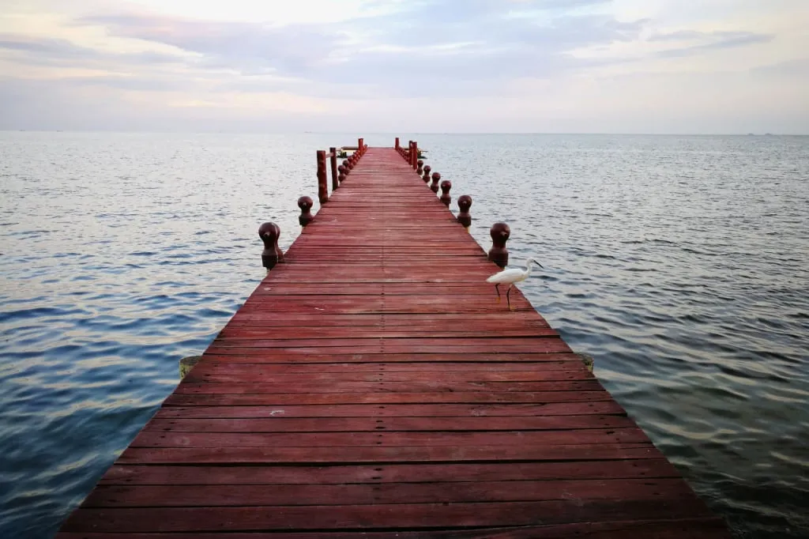
Lake Victoria. Interesting Facts.
Nestled right at the equator in Africa lies Lake Victoria. It’s so vast that it feels more like a sea than a lake. Not only is it the largest lake in Africa, but it’s also the world's It is defeated only by Lake Superior in North America. Interestingly, both lakes share a commonality. Each is part of a group of so-called Great Lakes. Victoria is among the African Great Lakes, while Superior is one
Here are some interesting facts about Lake Victoria:
- It's the world's largest tropical lake.
- The lungfish, an ancient fish capable of breathing through both gills and lungs, still lives here.
- It has completely dried up several times in the past.
- Most of its water is from rainfall.
- It supports the world's largest freshwater fishery (1 million tons of fish per year).
- Its local name is ‘Nyanza,’ which means 'lake' in one of the regional languages.
- It's the source from which the length of the Nile River is measured.
- Long before Europeans arrived, local communities cultivated coffee on its shores.
- According to local legends, it's home to elusive creatures like the Lukwata and the Dingonek.
Now we’ll delve deeper into these and other known facts from the history of this great lake.
Where is Lake Victoria located?
Lake Victoria is located in East Africa. The equator line crosses through its northern part. The countries sharing its waters are Tanzania (49%), Uganda (45%), and Kenya (6%). To the east of the lake lies the famous ecosystem known to the world for the Great Migration of animals: the adjacent Serengeti National Park and the Maasai Mara National Reserve. There are other protected areas nearby, and directly within its bounds are several island national parks.
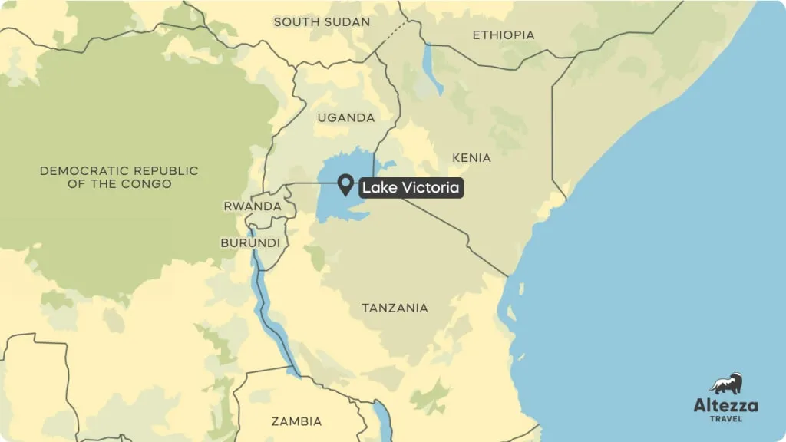
The Victoria Lake region is one of Africa's most populated. Including its entire basin and tributaries, over 40 million people live here. This includes neighboring Burundi and Rwanda. The here is quite striking. The area is overcrowded, and the strain on the lake is increasing. Later we will learn more about the consequences of that.
Size of the lake and other characteristics
Now let's begin to understand the size and significance of Lake Victoria. We will also attempt to understand its ecosystem and natural wonders. To do so we must first look at some key numbers. These describe the area, average and maximum depth, water volume, and so on.
What is Lake Victoria's surface area?
The lake's surface area is 68,800 km² (26,600 sq mi). It could fit Lithuania or two Belgiums. Imagine that! It is only 13,300 km² (5,135 sq mi) smaller than Lake Superior — the largest freshwater lake in the world (if we don't count the Caspian Sea).
The lake is 320 kilometers (199 miles) long. At its widest, it measures 275 kilometers (171 miles). Its shape resembles an irregular quadrilateral. The shoreline stretches an impressive 4,828 kilometers (3,000 miles). A shoreline walk around the lake takes you about 40 days!
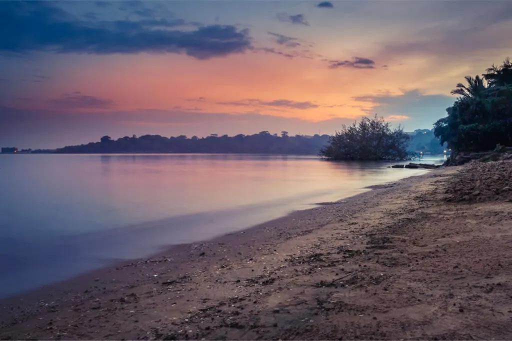
Lake Victoria depth
The average depth of Lake Victoria is 40 meters (131 feet). The maximum depth is 84 meters (276 feet). This is relatively shallow compared to nearby Lake Tanganyika. That lake reaches impressive depths of 1,471 meters (4,826 feet). This makes Tanganyika the deepest in Africa and the second deepest lake in the world after Lake Baikal.
Lake Victoria contains 2,750 cubic kilometers (659 cubic miles) of water. This places it ninth worldwide. Its vast area, rather than depth, accounts for this. Some might be surprised that several of the world's most impressive lakes are located in Africa, but this beautiful continent is full of amazing surprises!
Inflows and outflows
What feeds it? Lake Victoria receives about 80% of its water directly from rain. The remaining 20% comes from rivers flowing in. The largest is the Kagera River. It flows in from the west, starting in Burundi. While Lake Victoria is technically the Nile's source, the Kagera River plays this role in reality. More precisely, the Nyabarongo or Ruvubu Rivers should be called the Nile's source. These are tributaries of the Kagera. It's unclear which river is more crucial for the Kagera and hence, the river Nile basin.
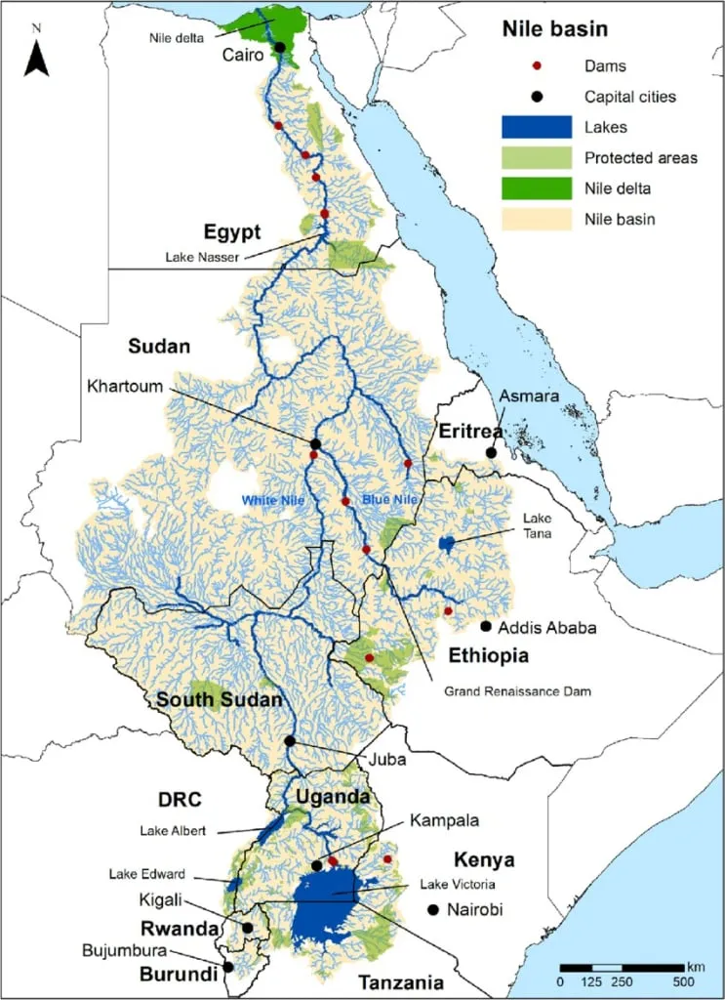
The Kagera River became infamous during the 1994 Rwandan genocide. Members of the Tutsi ethnic minority were slaughtered in the hundreds of thousands due to their ethnicity. Their bodies were dumped into the Kagera. The river overflowed with corpses, which were carried by currents into Lake Victoria. This tragedy caused an ecological disaster on Uganda's lakeshores. An emergency was declared where bodies washed ashore. This is one of the lake's darkest historical chapters.
What other rivers bring water to the lake? These include Kenya's Nzoia, Yala, Nyando, Sondu Miriu, and Gucha. Tanzania's Mara River and others also contribute. In total, 17 rivers and many unnamed streams flow into Lake Victoria. The small eastern rivers, mainly from Kenya, bring in more water than the large Kagera from the west.
Victoria Nile. Victoria's northern shore.
Which rivers take water from the lake? The only river leaving Lake Victoria is the Victoria Nile. It is a section of the White Nile - the Nile River's longest branch. Previously, a natural rock weir on Lake Victoria's northern side regulated water levels, allowing overflow into the White Nile when high, and halting the flow when low. In 1952, engineers working for Colonial Uganda's government replaced the natural weir and reservoir with a man-made barrage to manage lake water levels and address the rock weir's slow erosion.
Interestingly, the Nile was long thought to be the Brazilian researchers challenged this, claiming the Amazon River system is longer. Measurements and debates continue to this day.
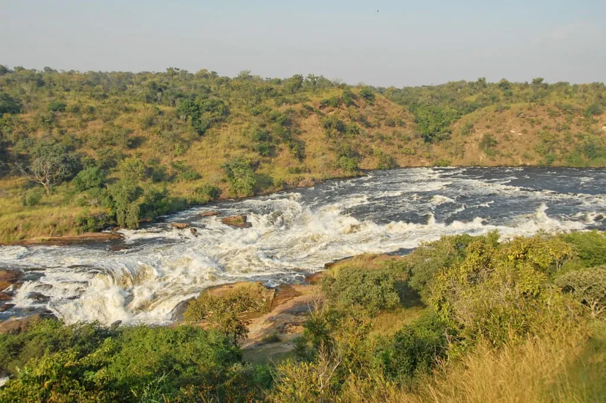
The Victoria Nile flows north from the south. It rushes towards Lake Albert, another of the African Great Lakes. Along the way, it goes through numerous waterfalls. Notably, the river is used for hydroelectric power generation. Three hydroelectric stations lie between lakes Victoria and Albert: Nalubaale dam (formerly Owen Falls dam), Kiira, and Bujagali.
The fast-moving river calms after crossing the Kyoga lakes cluster. These are often considered one single lake. Past these, the river gets the name the Kyoga Nile. After Lake Albert, it becomes the Albert Nile before exiting Uganda as the
Another river, the Katonga, was once thought to flow from Victoria. It was believed to head west to Lake George, named after Prince George, the future King George V. The river actually could flow from Victoria in the past. Geological shifts in the East African Rift altered this. Now the situation is a bit more tricky. The river’s waters can flow in both directions.
Lake Victoria islands
There are over 3,000 islands on Lake Victoria. Some are tiny, but some are large and inhabited. The largest, Ukerewe, covers 530 km² (204 sq mi). It's near Tanzania's Speke Gulf and the city of Mwanza. Ukerewe is thought to be the largest lake island in Africa. About 350,000 people live there.
Northwest on the Ugandan shore is the Ssese Islands group. It is the lake's largest archipelago with 84 islands. Kenya’s Rusinga Island is notable. Here, the skull of a hominid ancestor was found by Mary Leakey. She later made significant discoveries in Tanzania’s Olduvai Gorge. Today, archaeological work continues on the island. A discovered fossil forest reveals ancient apes and the first hominids that lived here millions of years ago.
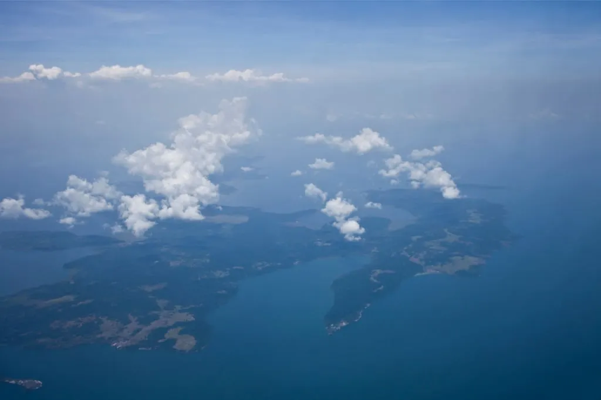
Other islands on Victoria also hold historical treasures. Kenya's Mfangano is home to ancient rock art. Uganda's Buvuma contains 10,000-year-old ceramic materials found in numerous caves.
Important primate fossils were found on Kenya's Maboko Island. Since the 1930s, hundreds of fossilized apes and other animals, including reptiles and mammals, have been discovered. Palaeotragus, ancient short-necked giraffes, and Trionyx, soft-shelled turtles, are examples. The most famous find is the extinct monkey family, named after the lake: Victoriapithecus.
Today, Uganda's Ngamba Island hosts a large chimpanzee sanctuary. Ngamba Island Chimpanzee Sanctuary shelters about 50 orphaned chimpanzees rescued from poachers, circuses, and other exploitative places across East Africa.
Island national parks
Three islands on Lake Victoria are entirely designated as national parks. In Kenya there is Ndere Island with Ndere Island National Park. Ndere, covered in grasses, is a bird sanctuary. It is home to hippos, crocodiles, impalas, monitor lizards, snakes, baboons, and other wildlife. Two other ones are on the Tanzanian territory. Those are Saanane and Rubondo Islands with national parks of the same names.
Saanane forms a national park with two other islets. All of them lie within the borders of Mwanza City, Tanzania. You can walk through the park, observing antelopes and zebras grazing nearby. They are accustomed to visitors. Because some animals are in enclosures, unprepared guests might see Saanane as a zoo-like park. We advise against visiting Saanane. It's better to take a safari tour to true wildlife national parks. For example, Serengeti National Park or Rubondo Island National Park, located further west.
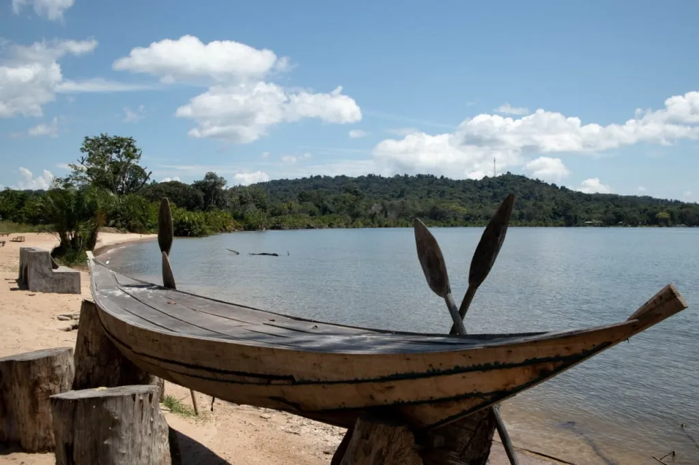
The rather large Rubondo Island sits in the southwest corner of Lake Victoria. It's surrounded by smaller islets. Together they form Rubondo Island National Park. The main island is covered in lush forests. Its sandy shores are washed by calm waters. Geologically, Rubondo consists of flooded volcanic hills. Chimpanzees call the forests of this island home. Elephants, antelopes, and other animals roam the valleys. Near the shores, you can often spot crocodiles and hippos.
Rubondo Island Park is exceptionally interesting with its unique ambiance. It reminds one of fantasy movies where wild nature reigns. A visit here, spending days away from familiar civilization, is worthwhile. Rubondo is so captivating that we will detail it further below.
We can also mention a few other conservation areas within the Lake Victoria basin. One of them is Kenya's Ruma National Park, located 10 km (6 mi) east of Victoria. It's known as the last sanctuary for the roan antelope in Kenya. The park is also home to leopards, rhinos, buffaloes, olive baboons, bushpigs, kongoni and topi antelopes, venomous vipers, cobras, and many other animals.
Can you swim in Lake Victoria?
Given the lake's vastness, swimming safety varies. Some spots are frequented by locals, while others are truly dangerous.
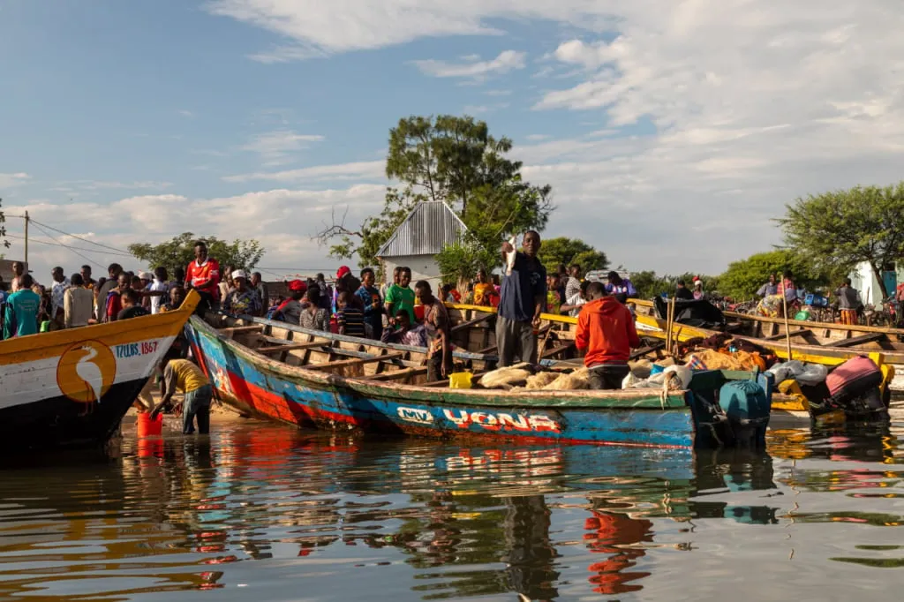
Lake Victoria's waters conceal three main hazards:
- Poor water quality. Parts of the lake suffer from pollution due to in-flowing rivers and streams. They often carry industrial waste, agricultural chemicals, and urban runoff.
- Parasites causing schistosomiasis. In certain locales, water is infested with blood flukes from the class of flatworms. Those can penetrate the skin and cause intestinal and urogenital damage.
- Wild animals. In less densely populated areas, crocodiles and hippos reside, posing a danger to humans.
Significant pollution plagues Lake Victoria. It stems from untreated wastewater, including industrial and domestic effluents. Chemicals and fertilizers from fields enter the lake through rivers. Many wash cars by the lake, spilling traces of oil and fuel. The high population density around the lake suggests a heavy pollution load. The inadequate sewage systems of large coastal cities also contribute. As a result, untreated effluents inevitably enter the lake.
These conditions facilitate the spread of diseases. For example, dysentery, malaria, and cholera. High population density, inadequate sanitation, and weak governance increase health vulnerabilities.
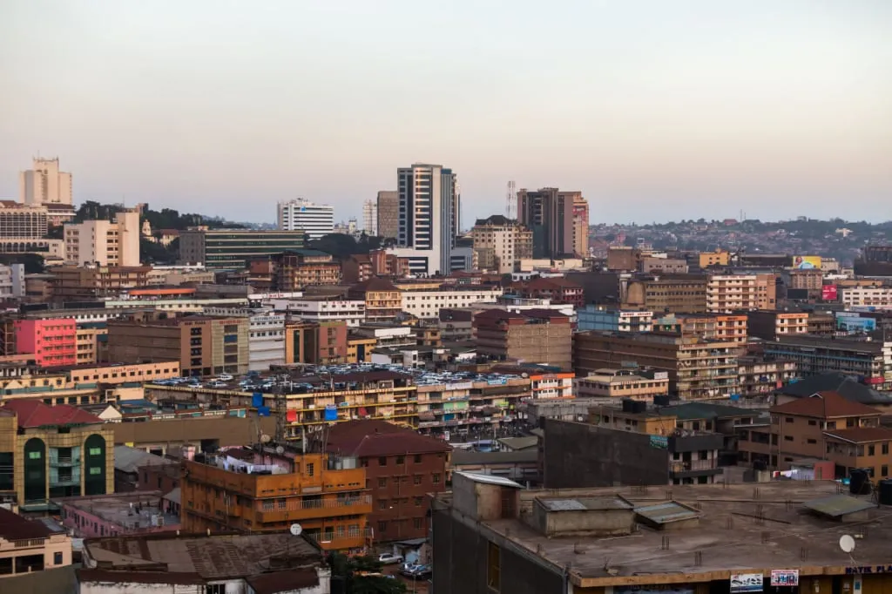
A particular disease that we mentioned above stands out. It is schistosomiasis, also named bilharzia after Theodor Bilharz. He discovered the parasites that spread it. These small trematodes, parasitizing snails, seek to infect mammals, including humans. They penetrate the skin in water, heading to the stomach or bladder to reproduce. Skin reaction includes itching and rash. Internal effects later include pain and blood in excretions. It can potentially cause fever or even chronic conditions, such as infertility.
Historically lethal, schistosomiasis is now treatable with affordable antiparasitic drugs. Originating from the African Great Lakes, it ranks behind malaria in tropical disease impact. It affects fishermen and fieldworkers who frequently contact with lake waters. Swimmers in Lake Victoria are also at risk.
Crocodiles on the lake’s coast and islands pose a notable danger to local bathers and adventurous tourists. Numerous media reports detail crocodile attacks and fatalities. Searches for "crocodile Lake Victoria" yield many recent accounts. Those reptiles are really common in the lake.
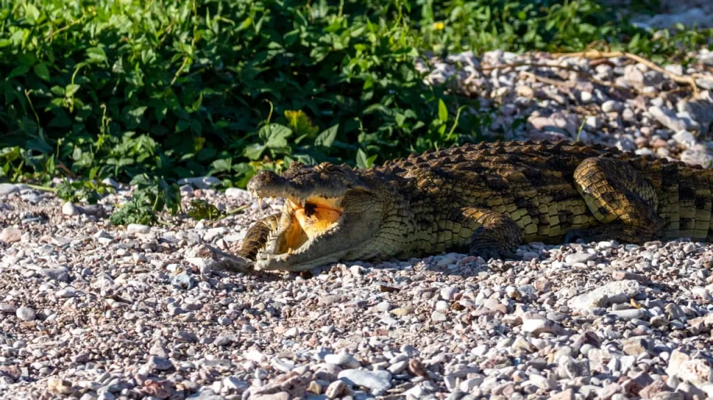
Why is the lake called Victoria?
The lake got the name Victoria from British explorer John Hanning Speke in 1858. He found it and declared it the Nile's source, which was sought by many explorers at the time. Happy about the great discovery, Speke named it after Queen Victoria, the then Queen of Great Britain.
At that time, the United Kingdom was in an era of achievement across various sectors: industrial, cultural, scientific, and political. This era would later be named the Victorian era. A long period of peace fueled the industrial revolution and economic boom. This allowed Britain to venture into distant lands for conquest and exploration. It vied with the Russian Empire in Asia and neared colonial expansion in Africa. This period was marked by bold and numerous expeditions, including that of Speke and Burton. We will talk about that expedition later.
For over a century and a half, the lake has been called Victoria worldwide. But did it have another name by which local inhabitants called it? Yes, it had several, because various peoples with different languages lived along the shores of the large lake, which resembled a sea. Let's mention the most common local name for Lake Victoria - Nyanza, which means "lake" in Kinyarwanda. In Luganda, it was called Nalubaale, meaning "Home of the Spirit." In Swahili, it was Ukerewe, named after the local Kerewe people. Now, this name remains with the largest island. There are other names for the lake in the three countries of the East African community that share it. In the 1960s, there was an attempt to choose a new common name, but the idea failed. The lake continues to be known by different names depending on the region.
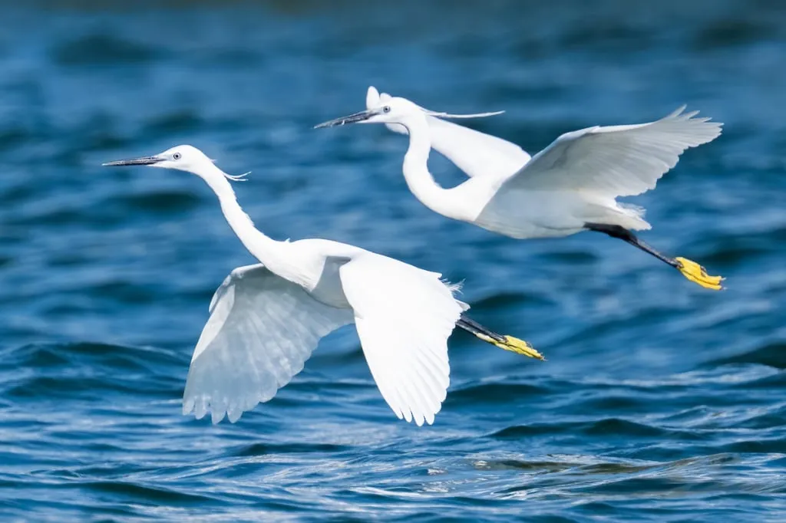
How was Lake Victoria discovered?
Of course, indigenous Africans of the Lake Victoria region always knew of the lake. Many people lived nearby or traveled here. However, no maps or records of the great lake survived since those older times. The African peoples did not have a writing system. The world learned of the existence of the vast African lake twice. First from Arab explorers, and then from Europeans.
Arab geographers
Arab traders were the first to mention Lake Victoria. They scoured the inland routes of the continent for gold, ivory, and valuable natural resources. By the 12th century, the first map showing a vast part of Africa emerged. It not only displayed Lake Victoria but also noted it as the Nile's source. This was centuries before Europeans "discovered" it in the 19th century and then debated its status as the Nile's source. Those early geographic achievements of Arab explorers are truly remarkable.
The map's creator was the geographer Muhammad al-Idrisi, who worked at Sicilian King Roger II's court. Roger II was considered highly enlightened, inviting scholars and philosophers to his kingdom. He conceived the idea of compiling all known geographic knowledge. Al-Idrisi led the commission formed for this task. The Sicilian king gathered travelers for interviews by the commission and sent expeditions abroad.
Their 18-year effort yielded two remarkable works: a silver planisphere—a disc with a detailed world map—and a book of maps. Unfortunately, the silver planisphere didn't survive. But the book, known as Tabula Rogeriana or the Book of Roger, still exists. Published in 1154, it contains 70 maps with the most accurate geographic details known before Columbus's era. Its full Arabic title translates to "The Delight of Him Who Desires to Journey Through the Climates". This detailed work cites several thousand geographical locations.
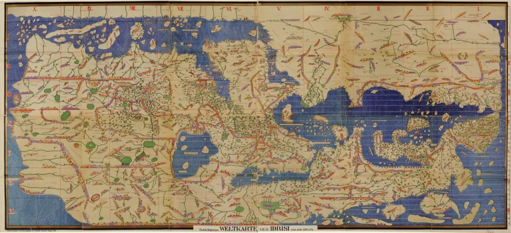
The main map became a large image of the then-known world, depicted as an inverted geographical map with the south at the top. Of particular interest is the large colorful map taken from a 1456 copy that you see above. We should also look at some maps from the original publication.
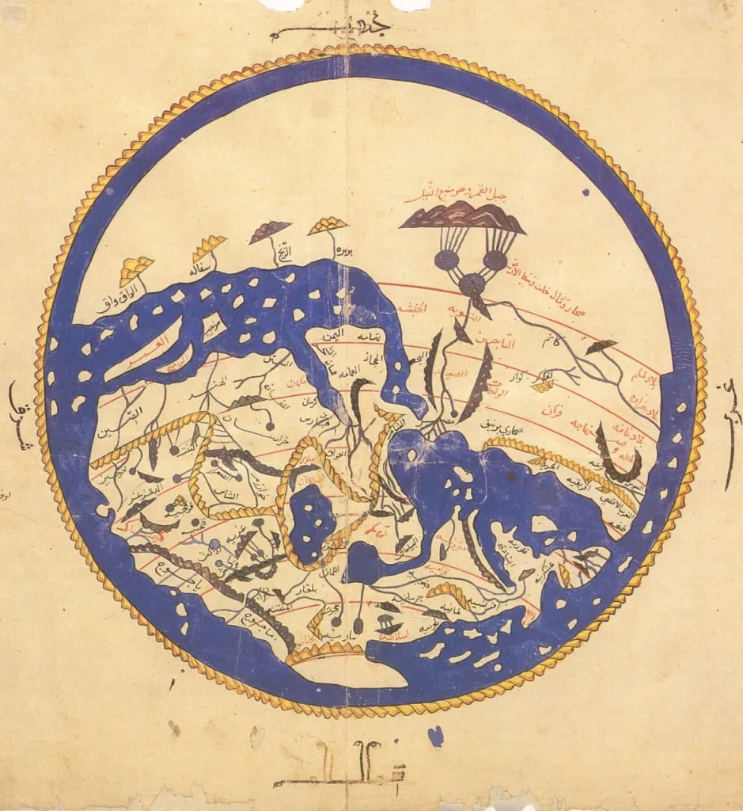
Let's flip to the more familiar orientation with the north at the top. As you can see, the map fairly accurately shows the Nile flowing towards the Great African Lakes.
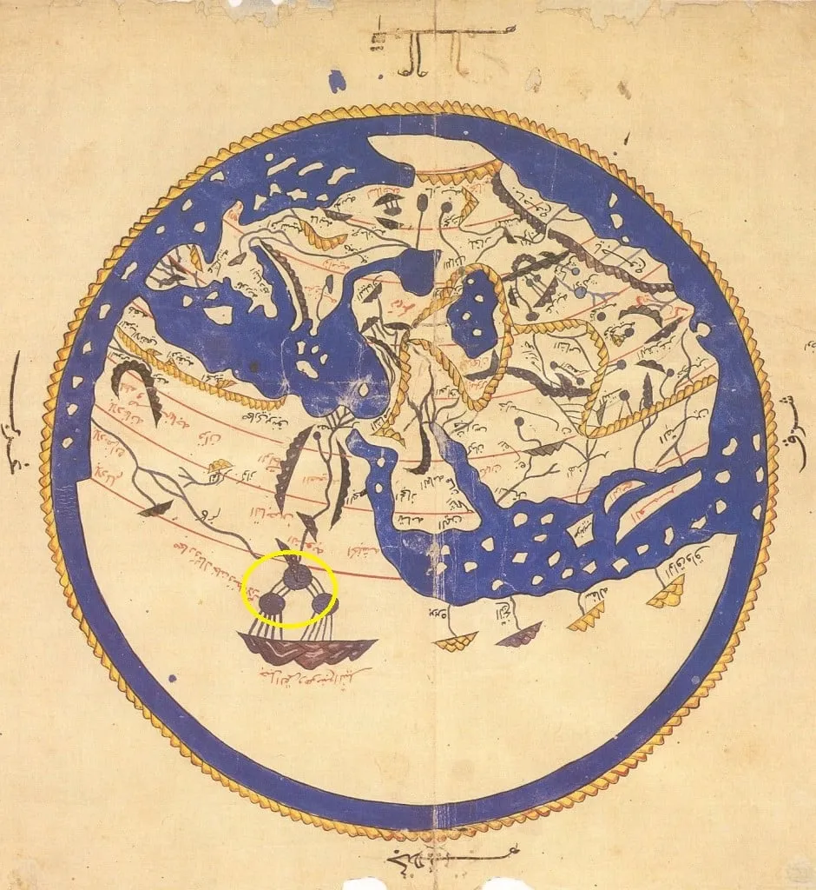
Ancient writers like Alexandria's geographer Claudius Ptolemy and the Roman historian Paulus Orosius informed the data, along with several Arab geographers. We detail this because Arab geography often gets overlooked. Many articles start their narratives with 19th-century British explorers.
British explorers
Two decades of meticulous research preceded the territorial expansion of the British in Africa. That research unveiled not only the detailed geography of this part of the country (East Central Africa) but also its previously undiscovered wildlife and plant species.
The quest for the Nile's source was undertaken by two notable explorers. Sir Richard Francis Burton and British Indian Army officer John Hanning Speke.
Burton and Speke
Richard Burton grew up in a family that moved often. From an early age, he had excellent hearing and memory. That helped him rapidly learn languages with precise pronunciation. By the end of his life, he had mastered 26 languages and various dialects. While serving in the army in distant India, he not only learned local languages, Persian, and Arabic, but also deeply explored the cultures and religious traditions, including Sikhism and Islam. Soon he started to live like a follower of Islam and could recite the Quran from memory.
Burton's fame soared after he visited the Muslim holy cities of Medina and Mecca on a pilgrimage. Places where non-Muslims were legally forbidden. Before him, only two non-Muslim Europeans had managed to enter. But it was Burton's detailed account that captured the public's imagination. To infiltrate the most sacred sites of Islam, he meticulously studied Muslim traditions, speech manners, and etiquette, underwent circumcision, and disguised himself as a Sunni sheikh, a doctor, or a dervish, traveling with a caravan of nomads.
.")
After a successful venture and detailed account of the Mecca pilgrimage, the Royal Geographical Society equipped Burton for an expedition to Somaliland, at the northern tip of the so-called He had two partners but needed a third. A British Army captain freshly arrived from Asia volunteered. His name was John Speke.
Before the Nile expedition, Speke had served in military campaigns in British India. He explored the Himalayas including Everest, and studied Tibet. Arriving in Somalia to collect samples for the natural history museum, he was denied due to the region's dangers. That's when he volunteered to join Burton's journey.
Their expedition began in October 1854. Soon after, the explorers were ambushed by two hundred Somalis. They killed a team member, injured Burton, and captured Speke. A spear pierced through Richard Burton's mouth, entering one cheek and exiting the other. The scars from this event are visible on his cheeks in all photographs. Despite this, the expedition leader escaped. John Speke, also impaled by a spear that went through the soft tissues of his thigh, escaped with his hands bound, dodging pursuit and spears. The expedition was thwarted. Their samples and tools were lost, and an investigation into the travelers commenced.
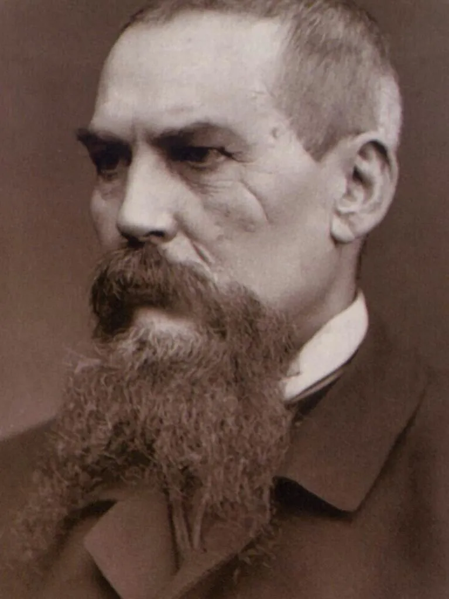
Searching for the source of the Nile
One might think that after such events, especially with the disputes between Burton and Speke, no more expeditions to Africa would be possible. Yet, an investigation that lasted two years exonerated the British explorers from the conflict. In 1856, the Royal Geographical Society funded another expedition for Richard Burton. This time, he was sent deeper into Africa to explore the lake region. Once again, with John Speke on his team, Burton embarked on a new journey.
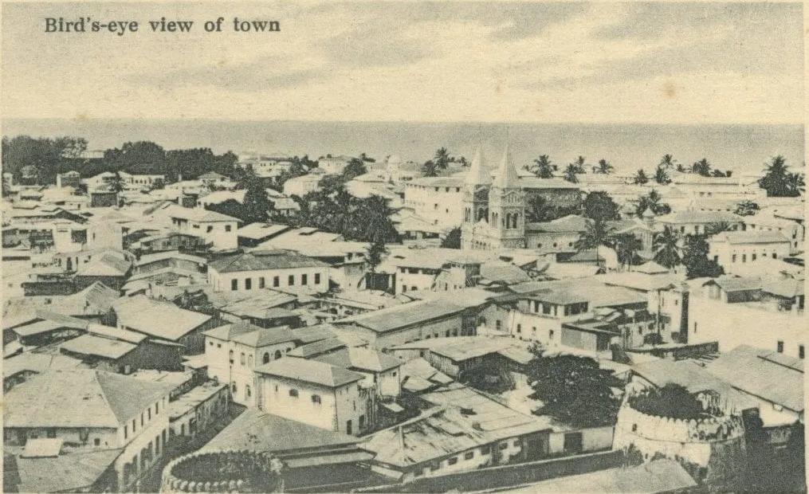
The British started from Zanzibar in June 1857. They traveled the Arab route to Lake Tanganyika with a caravan of 130 people. Along the way, both suffered from malaria, fever, and other ailments. At times, the Britons were so weakened that they were wrapped in hammocks and carried. Many of the animals carrying their supplies died on the road, and the mercenaries scattered. A bug flew into John Speke's ear, which could only be removed with a knife, causing the explorer to temporarily lose his hearing. Richard Burton also fell seriously ill. As they approached the lake, another calamity befell the unfortunate Speke — he was temporarily blinded. In February 1858, the travelers reached the beautiful Lake Tanganyika. But Speke could not see it properly. Burton, struck by its beauty, described the Great Lake to his companion. They were the first Europeans to see it.
The travelers couldn't explore the lake due to a lack of geodetic equipment, the inability to hire a suitable vessel, and the tropical diseases that plagued them. Therefore, they decided to return to the Indian Ocean coast. However, they heard about a second lake located to the northeast. Burton was so weakened that he remained to recover in a local settlement. Speke set off alone to the second lake with thirty mercenaries. On July 30, 1858, he reached the shore of the lake, which the locals called Nalubaale, Nyanza, Nam Lolwe, or Ukerewe. He named it in honor of Queen Victoria.
Without geodetic equipment, he estimated the lake's altitude based on the temperature at which water boiled there. It appeared that this lake was the source of the Nile. Satisfied with his discovery, Speke returned to Burton, and together they headed back to Zanzibar.
Telling this story, it is also worth mentioning two guides without whom the discovery of the Great Lakes would have been impossible. These were locals named Mabruki and Sidi Mubarak Bombay. Little is known about the former, but the latter became famous and embarked on more expeditions with other explorers. Sidi was from the Yao people and was a native of the lands in the south of what is now Tanzania. He was sold into slavery to India as a child, where he took the name Bombay. It was Bombay who led the caravan and negotiated with the hostile tribes they encountered along the way. Later, he led caravans for explorers such as Henry Morton Stanley and Verney Lovett Cameron. Cameron later became the first European to cross equatorial Africa from the Indian Ocean to the Atlantic. This occurred in 1875, with Bombay leading that famous caravan.
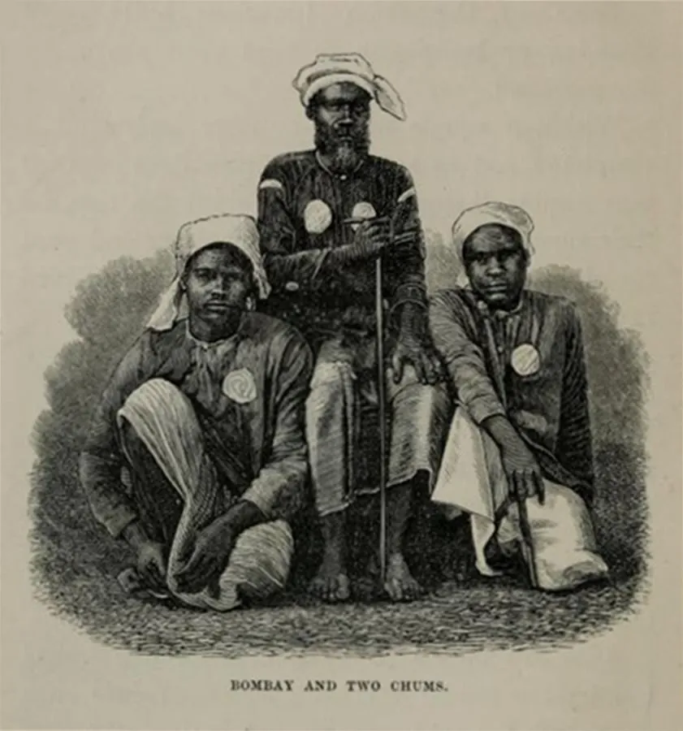
The second expedition: Speke and Grant
Upon returning to Britain, Burton and Speke began to argue more strongly, especially about the true source of the Nile. Speke confidently claimed that Lake Victoria, which he had discovered, was the long-sought source. Burton disagreed and argued that the source should be considered the river flowing out of the northern part of Tanganyika. The disputes were so serious that the geographical society split into two camps. Another expedition had to be organized. This time, John Speke was entrusted with leading it. Taking the Scottish explorer James Augustus Grant as his travel partner, Speke set out from Zanzibar in October 1860.
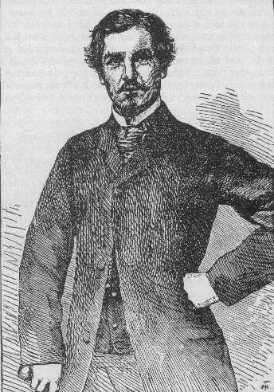
In 1861, the expedition approached Lake Victoria from the west. Grant often fell seriously ill during the journey. His ordeals included suffering from the Buruli ulcer infection. So he had to spend a lot of time in camps recovering. He was treated by Bombay, the guide traveling with the expedition. Speke explored the lands to the west and north of the lake. He discovered the actual Victoria Nile River and the inflowing Kagera River. Reunited with Grant, Speke traveled down the Nile.
In 1863, Speke and Grant met the explorer Samuel White Baker. Baker with his wife was also searching for the sources of the Nile. The following year, he would discover the river's second source — Lake Albert — and the Kabarega Falls on the Victoria Nile.
In June 1863, John Speke and James Grant returned to England, where a new cycle of public disputes began with Burton. Burton criticized his former partner for not following the river north from Lake Victoria. Hence Burton argued he couldn't claim the lake as the Nile's source. It must be said that Richard Burton, an emotional man, was deeply upset and perhaps jealous, regretting that illness had prevented him from reaching the great lake.
Book, film, and series about Burton and Speke
Public debates, organized by the Royal Geographical Society, were scheduled for September 16, 1864. The scientific community decided to settle the dispute and clarify the source of the Nile once and for all. However, the day before a tragedy happened. John Hanning Speke, out hunting, accidentally shot himself. He died the same day, leaving the question of the Nile source open among explorers.
The complex relationship between the two explorers was captured in the historical novel "Burton and Speke." In 1990, this novel inspired the film "Mountains of the Moon."Patrick Bergin, known for his role as Robin Hood, played Richard Burton. And Ian Glen, now famous as Jorah Mormont from "Game of Thrones," played John Speke. We confidently recommend this fine historical movie for viewing.
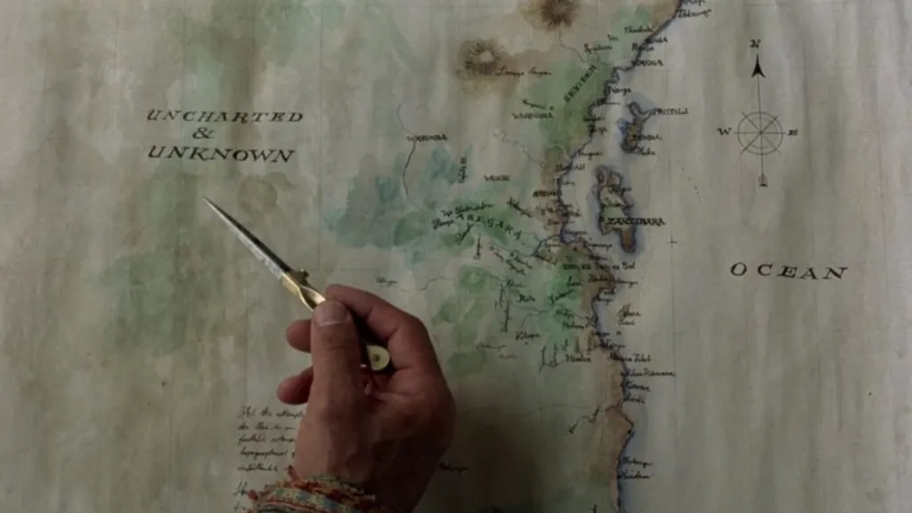
In Europe, debates on the Nile's sources persisted. David Livingstone's famous expeditions now took the spotlight. The Scottish missionary had traveled to different parts of Africa. He dreamed about ending slavery there. Despite Arab raids for ivory and slaves, Livingstone set out from Zanzibar in 1866. He was searching for the Nile's true source, believed to be south of the two discovered lakes.
Livingstone
David Livingstone came from a poor, large family in a small Scottish town. From age ten, he worked 14-hour shifts at a mill but still attended school. The idea of being a missionary, opposing slavery, and aiding people captivated him. For that purpose, he studied Latin, Greek, and sciences. Through his efforts, he managed to save for university, where he studied medicine with dedication.
In 1841, he secured a position as a missionary in Africa, at Cape Town. For the next 16 years, he traveled through the southern and central regions of Africa, preaching and founding Christian missions. He quickly learned new languages, earning the respect of locals and instilling Christian values. His work was fraught with danger. A lion once attacked Livingstone, knocking him down and breaking his left arm. His arm remained in pain for the rest of his life and he couldn't raise it above the shoulder. He also nearly died from a severe fever and reportedly survived over 30 attacks by local tribes during his travels.
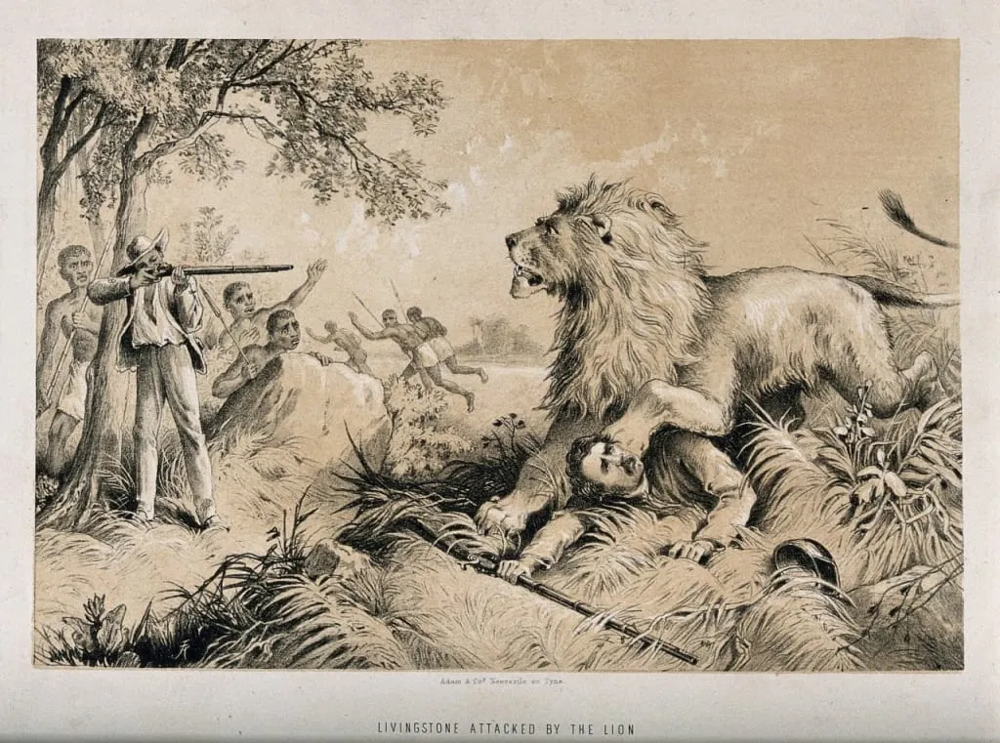
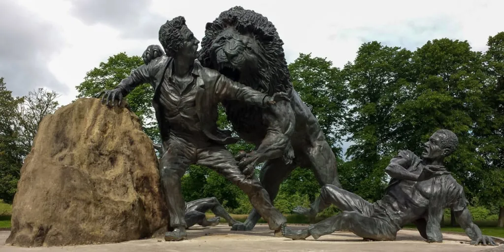
Livingstone braved dangers, undertaking lengthy travels across Africa. In 1849, he crossed the Kalahari Desert. By 1855, he reached the magnificent waterfall on the Zambezi River, the first European to witness it. He named it Victoria Falls after the British queen, just as John Speke would later name Africa's largest lake.
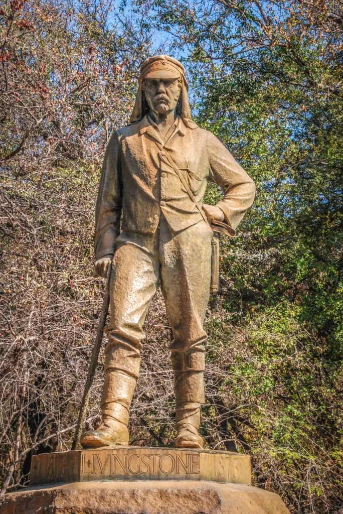
The inscription on Livingstone's monument at Victoria Falls reads: "Christianity, commerce, and civilization". It was the missionary's motto, by which he hoped to conquer the vile practice of the slave trade. Livingstone wanted to offer the indigenous Africans a dignified alternative to slavery.
Upon his return to Britain, Livingstone lectured widely. He was honored by the Royal Geographical Society for his research. As his adventure book became a bestseller, he gained even more fame. This helped him raise funds for another expedition to the Zambezi River Valley from 1858 to 1864. It coincided with the expeditions of Burton and Speke, and then Speke and Grant.
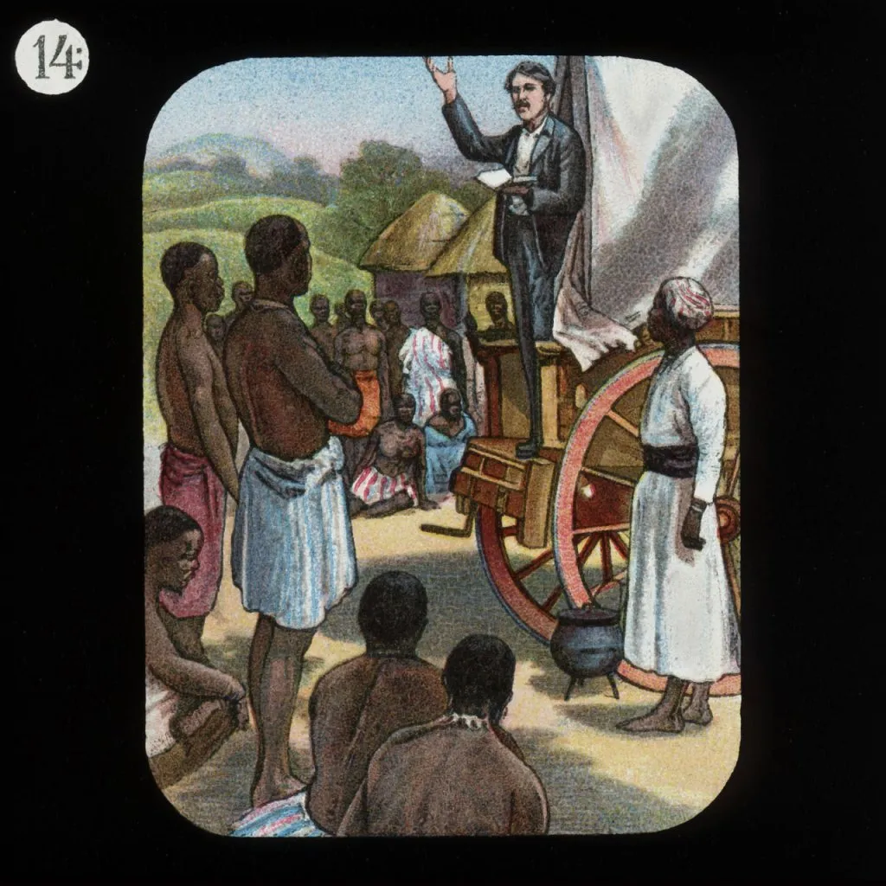
During the Zambezi mission, Livingstone studied Lake Nyasa (aka Lake Malawi) in depth. It's the third-largest lake in Africa. But the trip was tough and eventually failed. Malaria claimed his wife's life, and the team suffered mishaps and sickness. The economic value of their findings was also unclear. The mission was called off, and Livingstone faced harsh criticism in the press. It was called a total failure. Only years later did people recognize the value of his expedition. Botanical and geological specimens, and ethnographic records he brought back contributed to European research of the day.
Livingstone didn't give up. He raised funds and gained support. In 1866, he began his third African journey. He aimed to end the debates over the Nile's sources and had humanitarian goals. The explorer wanted to find the Nile's true source and gain fame and reputation. This could help him in talks to ban slavery and punish the slave trade.
This last venture drained Livingstone. Diseases plagued him, with ulcers and bouts of pneumonia and cholera. He was robbed and lost touch with the outside world. For six years, no word from him reached beyond Africa. During that time, he found two more lakes and charted various rivers. He made it to Lake Tanganyika's north end and a Congo River tributary, potentially the Nile's source. He explored further west in Africa than any other European before him.
By October 1871, Livingstone was so sick he could barely move. He braced for death, especially after losing his medicine chest. It was stolen, so he couldn't give himself any treatment. The Nile source mystery persisted.
Livingstone and Stanley
In the same year, the American newspaper New York Herald organized an expedition to Africa. It aimed to find the missing Livingstone, about whom nothing had been known for a long time. It was led by journalist Henry Morton Stanley. He had already been to Africa and brilliantly covered military events, gaining great fame.
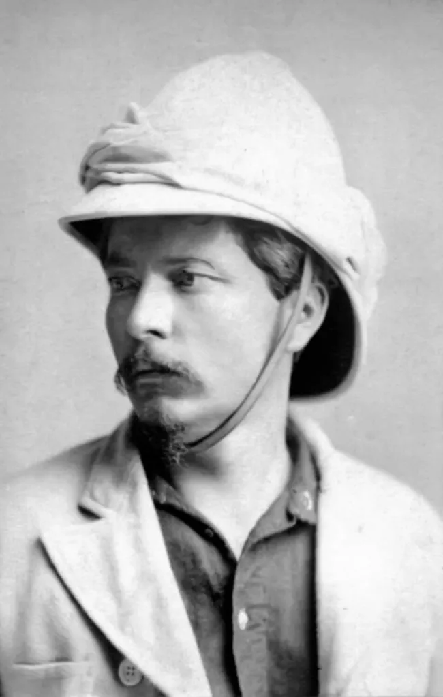
Henry Morton Stanley was an orphan from Wales. At 18, he emigrated to the USA, enlisted in the army, and fought in infantry and navy battles. Working as a freelance journalist, he developed correspondent skills. Stanley's adventures were many and varied. He took a trip to the Ottoman Empire and ended up imprisoned. As a special correspondent, he covered the war in Ethiopia. His journalism career also took him to the Middle East, the Caucasus, the Black Sea region, Persia, and India. In March 1871, the newspaper sent him to Zanzibar to organize an expedition to search for David Livingstone.
In November 1871, Stanley reached Ujiji, where he found the exhausted missionary traveler. Livingstone had just arrived in from another expedition when he was told about a white man leading a caravan down the street. Their meeting made history. It was covered by newspapers and discussed far beyond travelers' clubs. It is said that at this moment, the famous phrase "Dr. Livingstone, I presume?" was uttered. A monument to Stanley and Livingstone's meeting was erected there. Now it is considered a significant cultural asset.
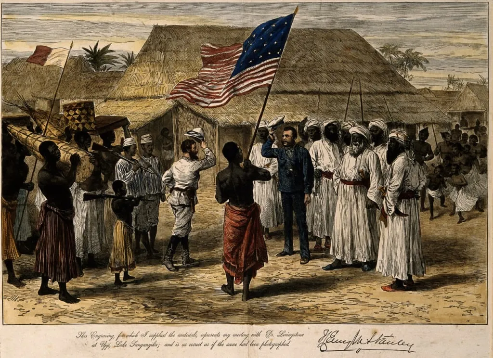
The medicines delivered by the journalist helped the severely ill missionary recover. Together with Livingstone, Stanley traveled to the northern shore of Lake Tanganyika, confirming no connection with the Nile. Leaving Livingstone by his choice deep in these lands, Henry Stanley returned to Zanzibar and soon published the popular book "How I Found Livingstone."
Livingstone continued to wander along various rivers, crossing swamps and exploring new lakes. He was determined to complete his research mission. It was said that his developing illness hindered his decision-making. A year and a half later, in May 1873, plagued by malaria and dysentery, David Livingstone died in the village of Chipundu, present-day Zambia. His loyal servants removed his heart from his body and buried it under a tree. His body was transported to Zanzibar by a voluntary expedition, from where it was shipped to London.
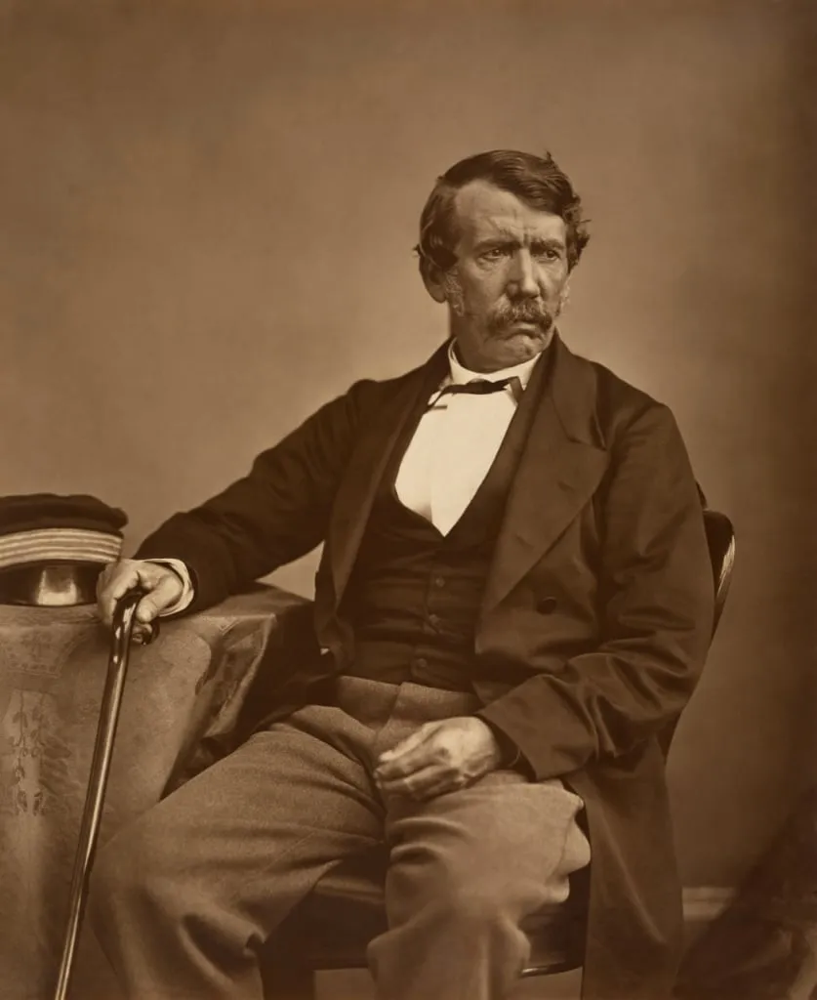
Years later, the memorial tree began to decay. It was cut down, and a cross was carved from part of this tree. Today, it is located in the Anglican Cathedral in Stone Town, an ancient city in Zanzibar. Stanley wrote about this brave man in the newspaper, so Livingstone's reputation was fully rehabilitated after negative publications.
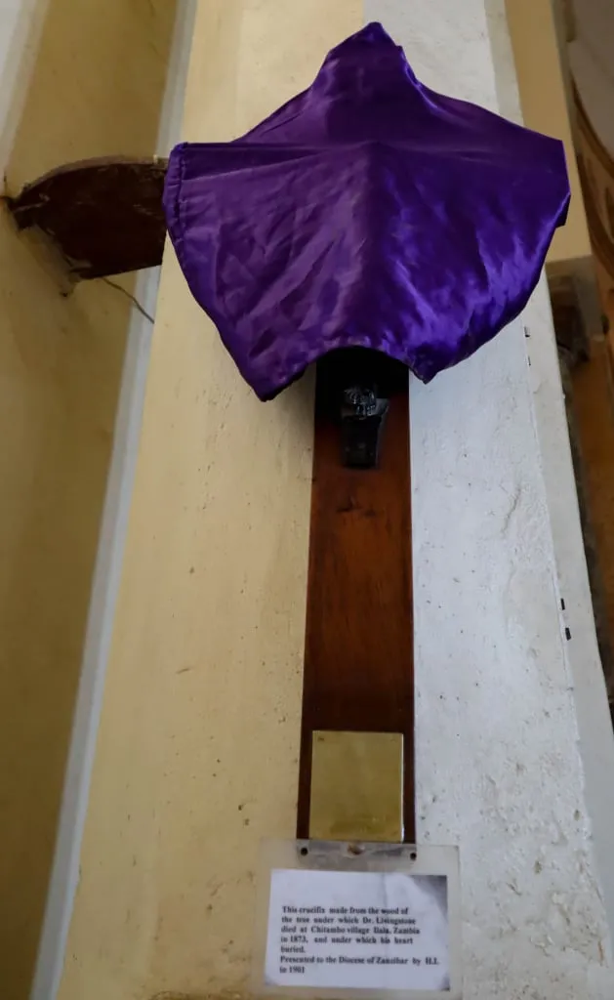
Stanley's exploration of Africa lasted many years. He led several expeditions. He also reported on military campaigns. Among his adventures, the first trans-African expedition of 1874–1877 stands out. This mission focused on three lakes: Tanganyika, Victoria, and Albert. It also explored the Luwalaba River, thought by Livingstone to be the potential Nile's source.
Final efforts in the quest for the Nile's source
In the saga of the Nile's source, Lake Victoria was the first target. Stanley surveyed a large southeastern bay on the southern shore of the lake. He named it Speke Gulf after the original discoverer. He also studied the Kagera River. War prevented the explorer from reaching Lake Albert. However, Tanganyika Lake was examined, and its geography was revised. At that time, Englishman Verney Cameron traveled the Congo River toward the Atlantic Ocean. By 1875, he crossed Africa at the equator. History would remember him as the first European to do so.
Stanley's expedition ended with the Luwalaba River's survey. It fed the Congo River, not the Nile. In this region, an infamous slave trader Tippu Tip from Zanzibar aided them. Despite his brutal profession, he was educated and polite, making agreements possible. He had already helped Stanley and Livingstone years before.
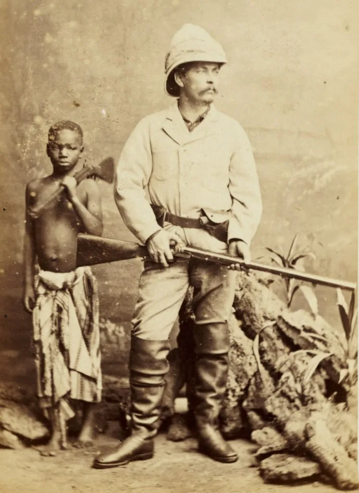
Stanley then followed the Congo River downstream. He constantly repelled attacks from armed locals, including cannibals. Waterfalls posed another threat, leading to many deaths. However, we must say that during the expedition not only death was present, but also new life. It is known that three children were born during the journeys.
After 999 days, Stanley's group reached Boma, near the Atlantic coast in modern-day D.R. Congo. That was in August 1877. His main goal was achieved: the Great Lakes and Congo River basin research yielded the long-awaited results. Victoria Lake and the Kagera River were finally confirmed as the Nile's sources. This ended the passionate disputes that had been rattling the geographic communities for decades.
Are Lake Victoria and Victoria Falls located near each other?
In the story of Europeans discovering Africa's largest lake and widest falls, we mentioned they were named after the British queen. The two discoveries happened three years apart. Can one visit both Victoria Lake and Falls at once? Are they close?
No, seeing both at once is impossible as they are not nearby but in different countries. Victoria Lake is shared by three East African states: Uganda, Kenya, and Tanzania. Victoria Falls is located on the Zimbabwe-Zambia border, over a thousand miles from the lake.
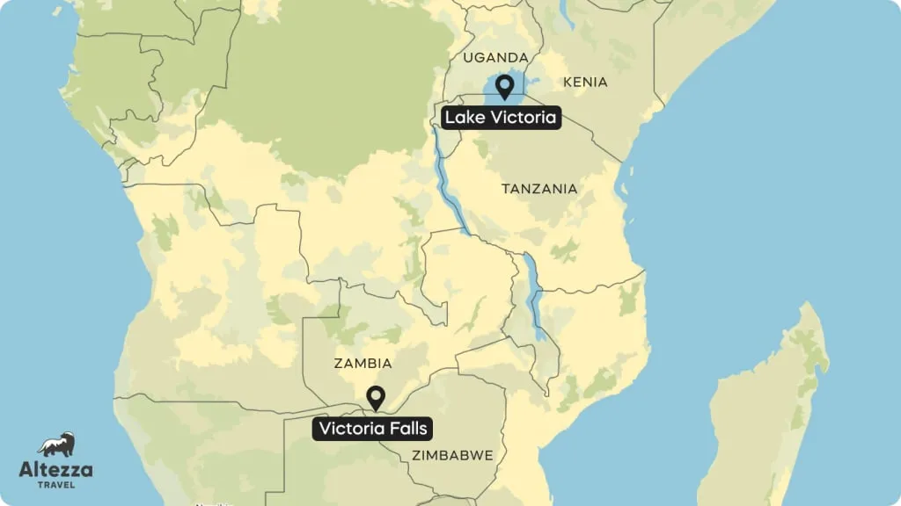
Let's consider the coordinates of these famous sites:
Coordinates of Lake Victoria: 1°0′0″ S, 33°0′0″ E.
Coordinates of Victoria Falls: 17°55′28″ S, 25°51′24″ E.
The distance is vast. A straight line between the falls and the lake is over 2000 km (1242 mi). A road trip from the falls to Mwanza City by the lake's southern shore is over 2500 km (1550 mi) and about 40 hours, crossing national borders.
Plan your African trip considering both Victorias' locations. If you want to see one of the world's widest falls and the second-largest lake, plan a route through multiple countries.
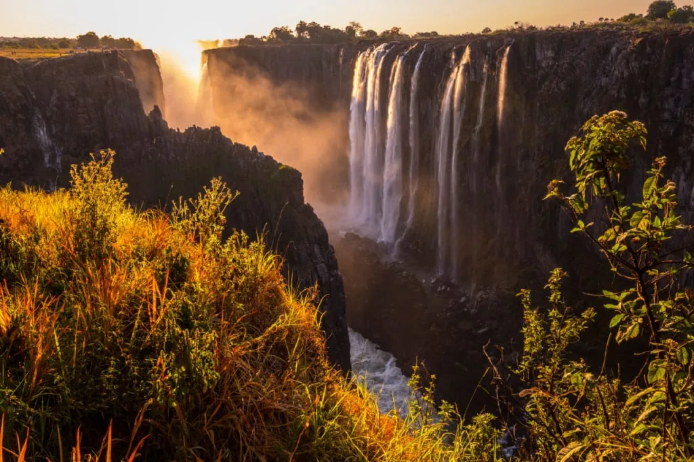
How and when was Lake Victoria formed?
After celebrating the courage and adventures of 12th and 19th-century explorers who sought the legendary lake and charted it, let's travel back thousands of years.
Lake Victoria is about 400,000 years old. Young by geological standards. It's cradled between the two branches of the East African Rift: Western and Eastern Rift Valley. They began to form 22–25 million years ago. Other Great African Lakes, ancient and deep, lie within these rifts. For example, Lake Tanganyika is 1471 m (4,823 f) deep and 9–12 million years old. Lake Nyasa (Lake Malawi) is over 700 m (2,297) deep, and 1–2 million years old.
Lake Victoria is shallower and younger because of its location. Before the rift, central African rivers split naturally west to the Atlantic and east to the Indian Ocean. The Somali Plate's split from the larger African Plate created the forked rift. A wall rose between the rift lines, trapping water from eastward and westward flowing rivers, forming the Nile River basin.
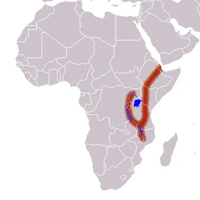
More precisely, Victoria Lake sits on the Victoria Microplate, linking the Nubian and Somali lithospheric plates. The latter two once formed the African Plate. The microplate slowly rotates counterclockwise. But these details can get quite technical. Understanding Lake Victoria's tectonic origin is enough. It's located at an elevation of 1,135 meters (3,724 feet), higher than other Great African Lakes.
Interestingly, there were times when the lake dried up completely. That was discovered by studying samples from the lakebed. Glacial activity and reduced rainfall were the main reasons. The lake dried up at least three times. Sometimes, insufficient water fractured the great lake into several smaller lakes. The last time it dried up was about 17,000 years ago at the end of an ice age. The lake's water level has been restored over time as the relatively shallow depression was filled with water from rains and incoming streams.
Which lakes are included in the Great African Lakes?
Let's list the other bodies of water in the Great African Lakes group. It's tricky because there are many lakes, and scientists have different criteria for inclusion.
Most often, the following are considered Great African Lakes:
- Victoria
- Malawi aka Nyasa
- Turkana aka Rudolf
- Albert
- Edward
- Kivu
Some researchers consider only lakes feeding the White Nile as Great, namely Victoria, Albert, and Edward. Near Tanganyika, there are other large lakes — Rukwa and Mweru. But they are not included in this group. Above we mentioned another notable lake — Lake Kyoga. It can be considered a complex of lakes, part of the Great African Lakes system. But it is not considered a "great lake" itself.
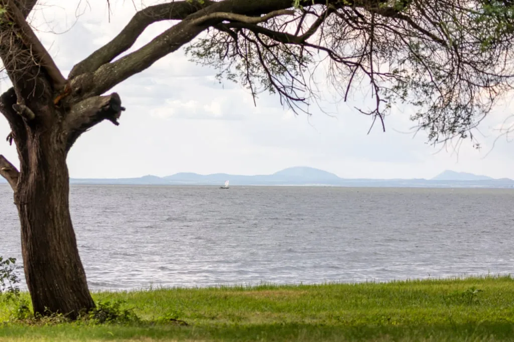
Four of the seven lakes bear the names of famous people. Victoria was named after Queen Victoria. Rudolf after Crown Prince Rudolf of Austria (later it was renamed to Lake Turkana). Albert after Queen Victoria's husband Prince Albert. Finally, Edward after their son Edward, future King Edward VII of Britain.
We have mentioned all British explorers who named the lakes upon their discovery. John Speke named Lake Victoria. Samuel Baker named Lake Albert. Henry Morton Stanley named Lake Edward during one of the expeditions that followed the period we have discussed. Besides discovering Lake Edward, Stanley on that expedition came to the aid of another explorer named Emin Pasha. Along the way, he mapped the Ruwenzori Mountains, also known as the Mountains of the Moon.
Lake Rudolf was first discovered by Hungarian explorer Count Samuel Teleki de Szek and Austrian geographer Ludwig von Höhnel. They are known for being among the first to try climbing Mount Kilimanjaro. Rudolf was the last of the Great African Lakes to be discovered. It was named in honor of Austrian crown prince Rudolf. Within a year, the crown prince's life ended tragically. Less than a century later, the lake was renamed Turkana, after the people living on its shores. Today, the name Lake Turkana is recognized worldwide.
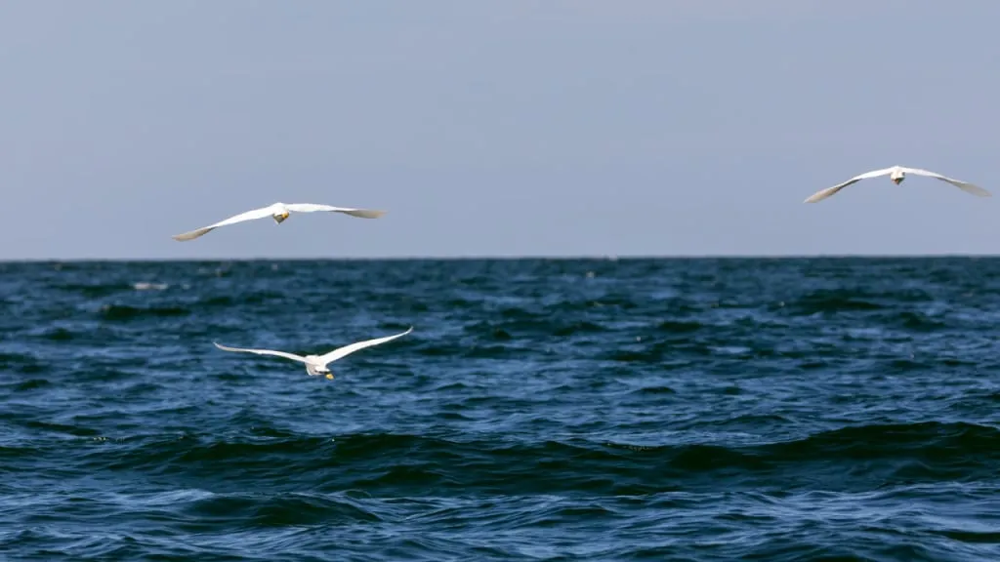
The remaining three lakes—Tanganyika, Nyasa, and Kivu—kept the names given by local people. It's noteworthy that Lake Nyasa is often called Malawi in the English-speaking world. There's a dormant territorial dispute between Tanzania and Malawi, the lake's co-owners, about the boundary's location. This dispute also affects the lake's local names. In Malawi, it's called Lake Malawi. In Tanzania, Nyasa. And in Mozambique, which also shares part of the lake, Niassa.
An interesting fact: Africa's three largest Great Lakes—Victoria, Tanganyika, and Nyasa—contain a quarter of the world's fresh lake water. The Rift Valley's lakes, taken together, are home to 10% of all known fish species in the world. This demonstrates the amazing biodiversity of those lakes.
Who lives in the lake?
Lake Victoria is considered the foremost in the world in terms of species diversity. However, there are caveats. First, many species have vanished due to human interference and no longer inhabit the lake. Second, hundreds of species in Lake Nyasa remain unstudied. So Nyasa may also claim the title for biodiversity.
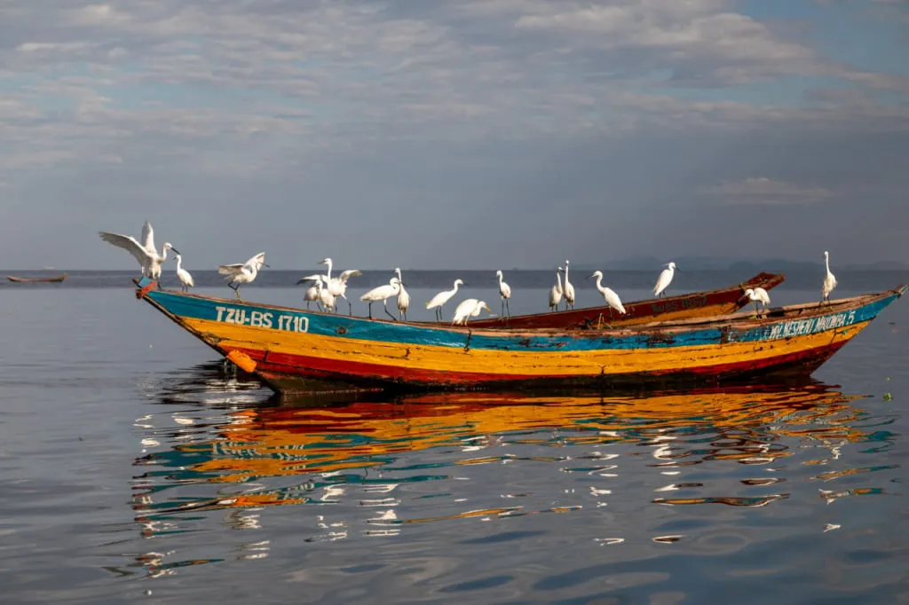
A modern study of Victoria's ichthyofauna (fish) estimates about 550 species, with approximately 500(!) being endemic cichlid species that inhabited or continue to inhabit the lake. This makes Lake Victoria truly interesting for fish enthusiasts.
Lake Victoria cichlids
Out of the 500 cichlid species that ever inhabited Victoria's waters, around 300 haven't been described. Most of these are from the genus Haplochromis. They're colorful, beautiful fish often found in aquariums worldwide. Cichlid fish enthusiasts appreciate them for their beauty and moderate aggression.
Seeing is better than reading explanations. Watch this short video showing several cichlid species from Lake Victoria in an aquarium.
Scientists find them interesting from an evolutionary standpoint. The evolutionary journey they've undergone in the last 15,000 years is considerable, which is unusual for fish. This relates to the lake's development after its last drying up. How many of the known 550 species have disappeared, and how many remain?
Today, about 200 fish species are said to inhabit Lake Victoria. Many have disappeared in the last 50 years due to two main causes: invasive predators and so-called eutrophication, both human-induced.
Other Lake Victoria fish
Regarding other endemic species besides cichlids, notable locals are the Singida tilapia (Oreochromis esculentus) and the Victoria tilapia (Oreochromis variabilis). Both are classified as Near Threatened. They were once very common and caught by the region's natives. This is especially true of the former fish. The introduced Nile perch, and very competitive fish like Nile tilapia have significantly damaged their populations.
Other fascinating endemics include Lake Victoria deepwater catfish (Xenoclarias eupogon), whose conservation status is uncertain. The carp species Xenobarbus loveridgei is extremely rare, known only from a few specimens. Non-endemics of interest include the beautiful fishes of the genus Brycinus, the attractive barbels of the genus Barbus, the Bagrus catfishes, the stunning whiskered catfishes Synodontis and Schilbe intermedius (Silver butter catfish), and the vividly colored killifishes Nothobranchius, favorite among aquarium enthusiasts.
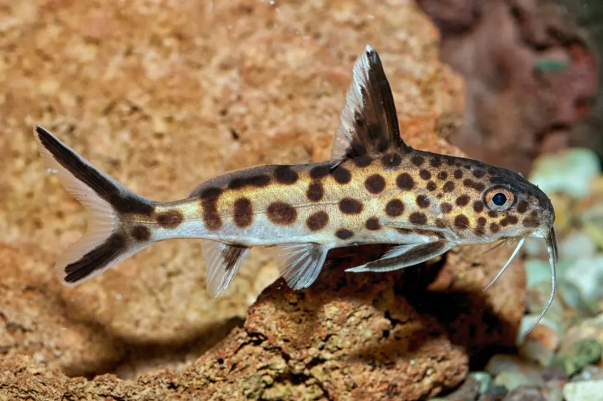
The spiny eels of the Mastacembelus genus are also quite impressive. Several species in this genus have elongated bodies with a fleshy appendage at the end of the snout. The so-called elephantfish of the genera Gnathonemus and Hippopotamyrus, are also visually interesting. Climbing gouramies of the genus Ctenopoma — labyrinth fishes with an organ for breathing atmospheric oxygen, are noteworthy from the evolutionary perspective.
Lake Victoria lungfish
The oldest fish in the lake is the Marbled lungfish (Protopterus aethiopicus), one of six extant species of lungfish, capable of both gill and lung respiration. Lungfish are considered the closest fish relatives to tetrapods due to their dual breathing ability. Another unique feature of lungfish is their ability to enter extended periods of estivation during droughts. They burrow into the mud, create a mucous cocoon around themselves, and sleep until the rains return to fill the lake. This dormancy can last from several months to a few years.
Surprisingly, these fish are numerous in Lake Victoria. Fishermen catch them, using the lungfish meat as food. The species' populations are not threatened and are even increasing.
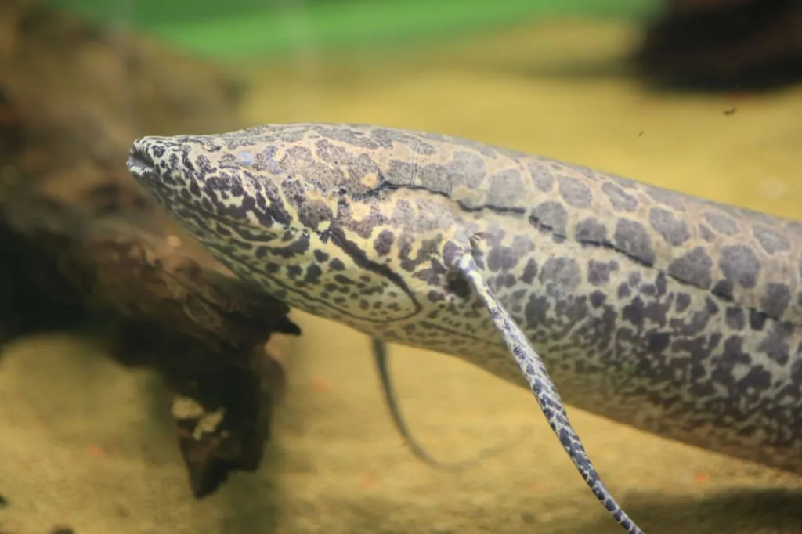
This is quite a large fish, growing up to two meters long. Its grayish body is marked with beautiful dark spots, creating a marbled or leopard pattern. In English, it's also known as the Leopard lungfish.
In parts of Africa where lakes dry up and lungfish retreat to burrows, locals have learned to catch them during estivation. In Sudan, special drums simulate raindrops' sounds. Hearing this, lungfish begin to stir or even wake up and crawl out, falling straight into the hands of hunters who purposefully explore dried-up water bodies.
As for lungfish predators besides humans, these include catfish, crocodiles, and large predatory birds like storks, herons, and pelicans. The Shoebill Stork is the primary predator of lungfish, as they are its favorite delicacy. Shoebill Storks are beautiful large birds with powerful beaks that have hooks at the end for catching large prey. They live in the wetlands to the west and southwest of Lake Victoria, where their habitat overlaps with that of the lungfish.
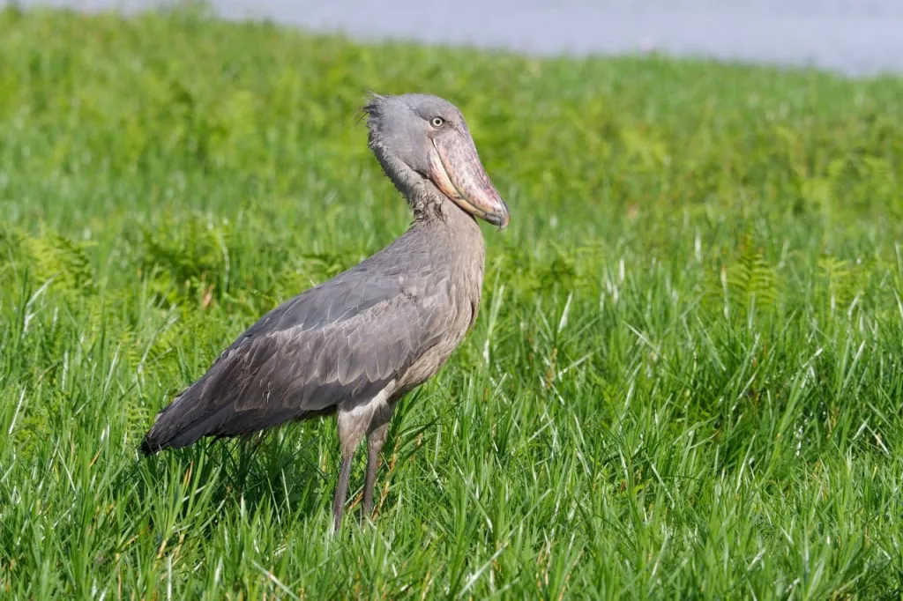
The Nile perch
The most common fish species in Lake Victoria is the Nile perch. However, it wasn't always so. In the 1950s and 60s, the Nile perch was introduced into Lake Victoria (where it was previously absent) to boost the fish catch. It is a vital economic activity for people living on the lake's shores.
This soon led to an ecological disaster. As a predator, the Nile perch severely damaged many other species, including a whole group of endemic cichlids. We're talking about more than two hundred cichlids wiped out by the Nile perch. The lake's ecosystem hasn't recovered from that human intervention. But the overall fish catch increased, improving the local people's welfare in the basin countries. Most of the catch is now the Nile perch; it has become an important food fish.
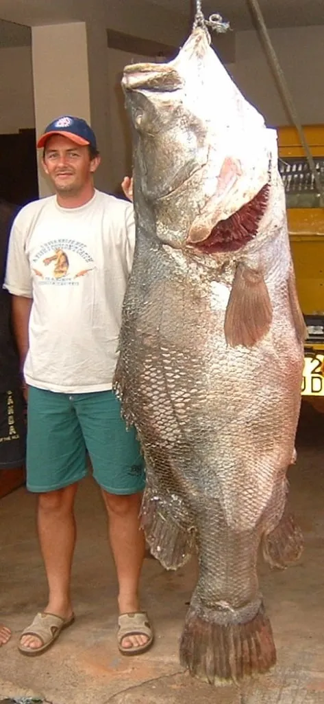
When discussing the Nile perch, it's worth noting that it's a large predator, growing up to two meters in length and weighing up to 200 kilograms. Although adult individuals often don't reach such sizes, being caught by fishermen earlier. Some conservationists list the Nile perch among the hundred worst invasive species in the world. When discussing the negative impact of humans on wildlife, the story of Lake Victoria and the Nile perch is often one of the first to be mentioned. We will now discuss the chain of events this mid-twentieth-century venture provoked.
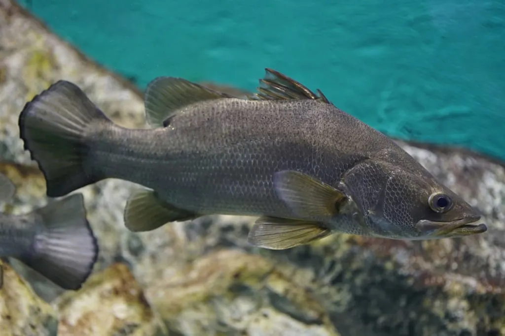
Another introduced species released into the lake in the last century is the Nile tilapia (Oreochromis niloticus). It now occupies the ecological niche of two local tilapia species and feeds on plankton. The Nile tilapia has displaced the existing species, though not as catastrophically as the Nile perch. However, both local tilapia species are now Nearly Threatened.
Fishing is an important economic element for regions around the lake. In the 1970s, many new people entered the industry. They engage not only in fishing but also in processing and transport. Local authorities happily report that whole fishing towns have sprung up around the lake, albeit with very low living standards. About 200,000 people are directly employed in fishing. Nowadays, the fishery yields up to one million tons of fish per year. It translates to about 400 million dollars in annual export revenues. This is a big business and a crucial source of international fish supply.
Birds and animals of Lake Victoria basin
Apart from the rich variety of fishes, Lake Victoria supports many other animals. In addition, several hundred bird species live on its islands and shores.
"Bird areas" are numerous bays, some islands, and coastal marshy places covered with papyrus and reeds. These spots attract water birds like herons, cormorants, storks, grebes, darters, pelicans, cranes, and about a dozen duck species. In the papyrus thickets, weavers and incredibly beautiful Papyrus Gonoleks nest. Shoebill Storks roam the swamps, and African Fish Eagles scout for prey in the sky. Many Marabou Storks live along the lake's shores. Colorful sunbirds, pink flamingos, beautiful kingfishers, and many other birds are present, totaling about 400 species. Lake Victoria birding is truly exciting.
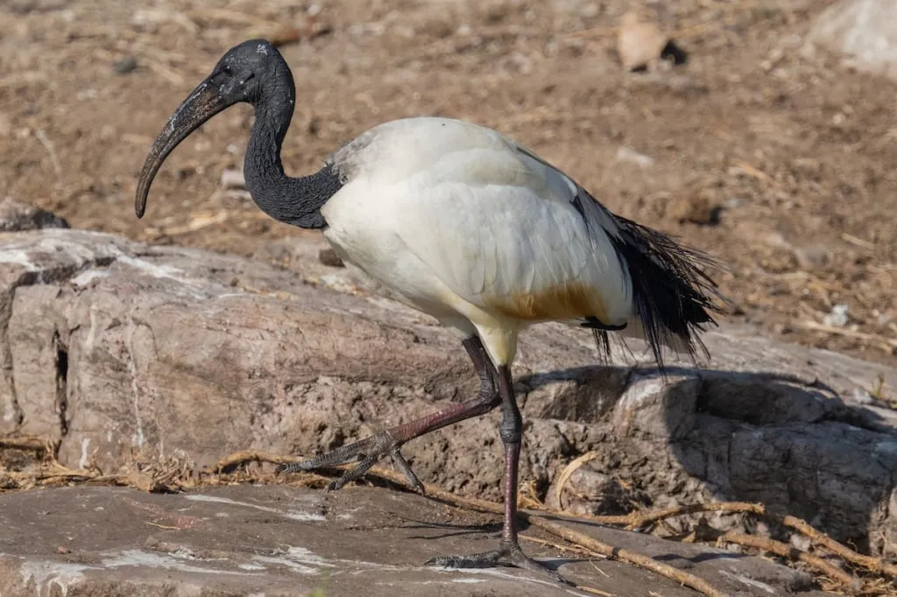
Lake Victoria not only hosts local birds but also attracts many migratory species. 34 endemic bird species are known to live here. When the team of Angelino Adventures visited Speke Gulf, Mwanza, Bukoba, and the islands of Rubondo Island National Park, we were amazed by the abundance and variety of birds. We could easily spot many species in a short time! We talk more about the birds on Lake Victoria's southern shore in an article that would be interesting for birders - read the section about Mwanza Gulf.
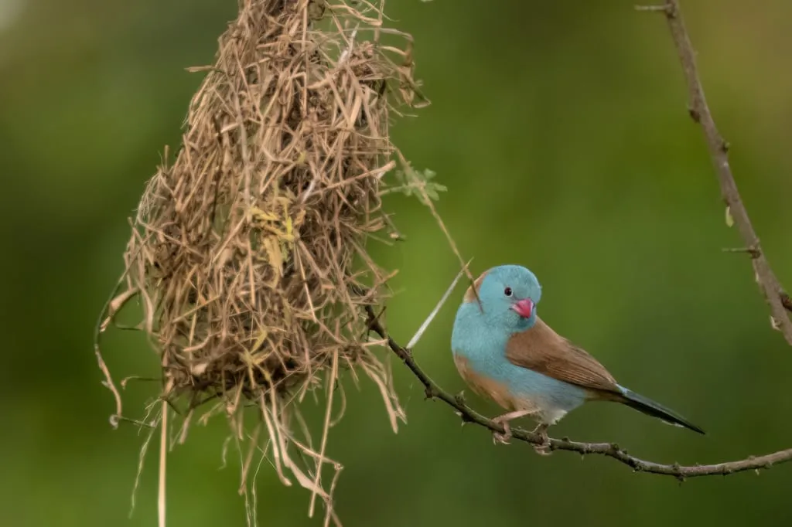
Near Rubondo Island's main island is a small isle teeming with thousands of birds! They are everywhere: in the air, on trees, by the water, on rocks. We were overwhelmed when we approached this "bird islet" by boat - the noise and the heavy scent from the constant bird droppings. For birdwatchers and ornithologists, Kalera Island is of great interest. You can read about the birds of Rubondo Island Park in our article.
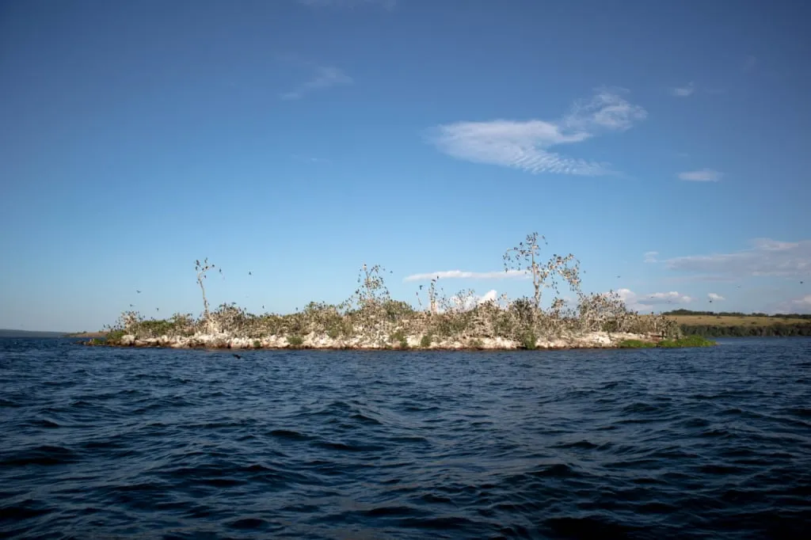
Who else can you see on the lake? First and foremost, hippos, which are very numerous here. If you want to find places teeming with them, head to the bays and river mouths. The lake is also famous for its vast number of Nile crocodiles, which choose quiet coastal spots. Other reptiles that have taken to the lake's waters include various species of turtles, such as the African helmeted turtle and Williams' mud turtle. Lake Victoria is also home to 28 species of freshwater snails and 4 species of freshwater crabs.
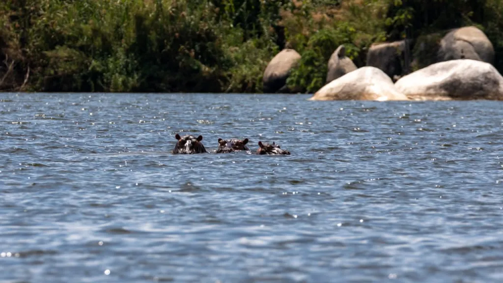
Mammals often seen on the shores include waterbucks, Bohor reedbucks, otters, and marsh mongooses. There's a great diversity of antelopes: oribi, impala, kongoni, and Roan antelopes. Elephants and giraffes live in the national parks. The same is true of vervet monkeys, baboons, colobuses, and chimpanzees.
But when it comes to large animals living near Lake Victoria and on its islands, the sitatunga is often the first to come to mind. The sitatunga is a beautiful forest antelope, notable for its long 10-cm (4-inch) hooves that allow it to move easily through swampy terrain. These antelopes are said to walk as if on heels. They can be found grazing in reed and papyrus thickets. They have disappeared from many other places. However, their populations are preserved on the islands of Lake Victoria thanks to the efforts of governments. The sitatunga is considered a true jewel of Lake Victoria. And the locals feel pride in the fact that those antelopes can be observed here.
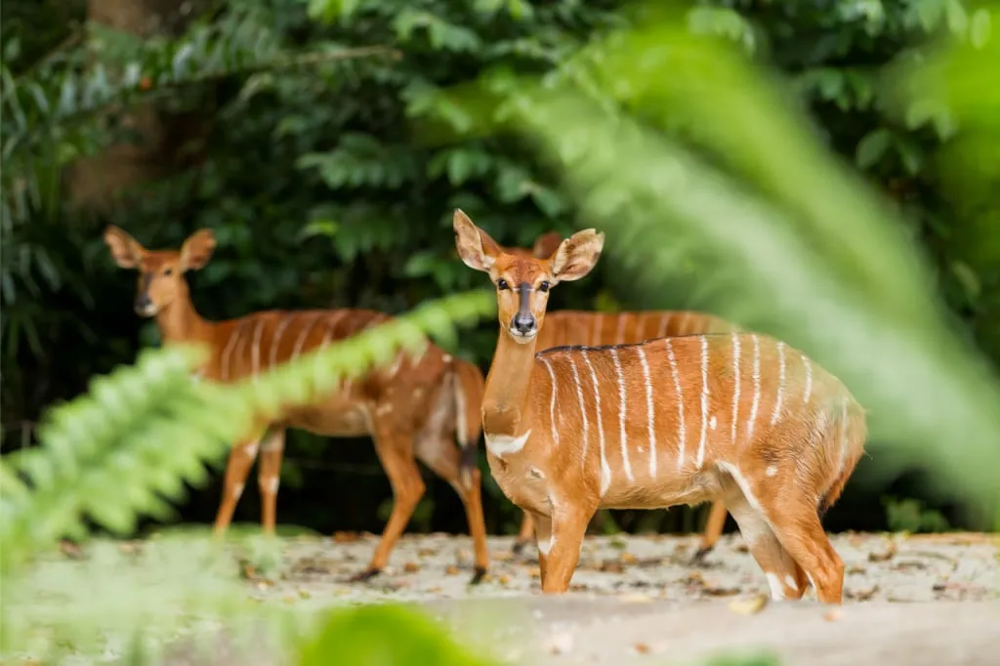
By the way, John Hanning Speke first saw and described the sitatunga in 1863 during his second expedition to the Nile sources. Today, his name is preserved in the scientific name of the species — Tragelaphus spekii.
Rubondo Island National Park
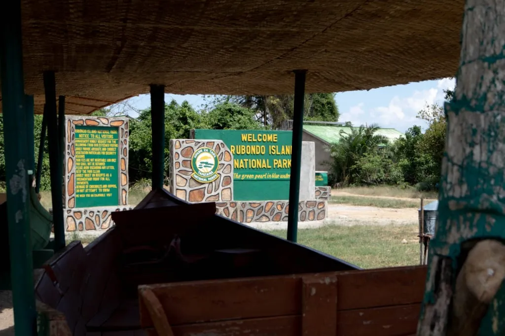
Our favorite national park and island on Lake Victoria is Rubondo Island, located in Tanzania. Let's talk a bit about it, and you'll understand why we favor it out of all the islands in this African lake.
The park comprises about ten islands, but the most impressive part is the main island of Rubondo. When we at Angelino Adventures visited the island in 2023, it struck us as a very interesting place. Lost amid the huge lake, like the ones shown in adventure movies like "Jurassic Park." Elephants were the first to greet us on a forest trail. We immediately understood that the upcoming days and nights on the island would be interesting and very informative for getting to know the wild nature.
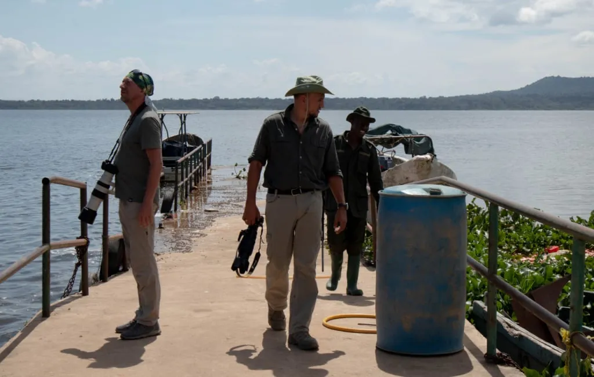
Every evening, we watched hippos emerge from the water after sunset. They grazed right next to our cabins. We also observed many birds and crocodiles. Shy antelopes, including the sitatungas (who are rare in Tanzania), appeared as well. Each morning on the wild beach's sand, we saw numerous tracks left by animals that had come to the water at night. Seeing chimpanzees living in the island's forest-covered hills was a real delight.
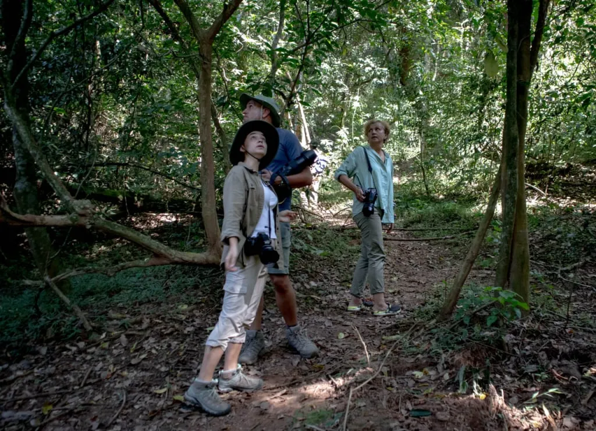
The history of Rubondo Island Park began in 1965 with the chimpanzees rescued from European circuses and zoos and released onto the uninhabited island. The idea came from the famous German zoologist, animal rights advocate, and "father" of modern Serengeti National Park— Bernhard Grzimek, author of the popular book "Serengeti Shall Not Die." Soon, elephants, giraffes, small antelopes suni, grey parrots, and colobuses were added, as well as Roan antelopes and black rhinos. Unfortunately, the latter two species did not settle on the island. But all others are thriving.
On Rubondo Island, you can also see bushbucks, dik-diks, and the rare sitatunga antelopes we've mentioned before. However, there are no large predators on Rubondo. You can see porcupines and wild cats here, as well as monitor lizards and pythons. The island is home to spitting cobras, horned vipers, and mambas, among snakes. About a hundred species of birds have been observed here.
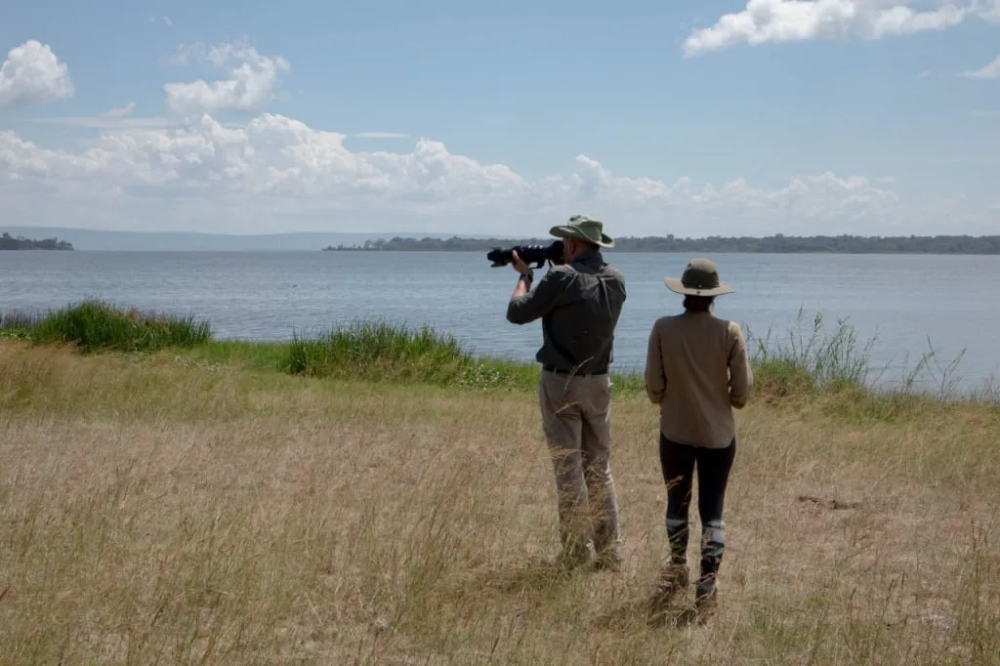
On the island, you can go on a safari, take forest walks with rangers, boat around the large island and smaller ones, observe birds, and immerse yourself in nature. This is a remarkable island that preserves many amazing animals due to its unique geographical location.
Towns and people by Lake Victoria
The shores of the lake vary greatly. The northern shores feature flat plains, while the southwest is rocky, with cliffs reaching up to 90 m (300 f) in some places. The west side is swampy, covered in papyrus growths.
Traditionally, ethnic groups such as the Luo, Ganda, and Soga in Uganda; Kisii and Luhya primarily from Kenya; and Tanzanian Kuria, Suba, Kwaya, Jita, Kerewe, Sukuma, Zinza, Haya, and others live around Lake Victoria. It is said that the Haya, inhabiting the lake's western shores, cultivated coffee even before the Europeans introduced it, along with bananas and sweet potatoes.
The largest cities on the shores of Lake Victoria and their populations:
Kampala (the capital of Uganda) – population of 6,700,000 including suburbs
- Entebbe (Uganda) – 70,000
- Jinja (Uganda) – 300,000
- Kisumu (Kenya) – 400,000
- Homa Bay (Kenya) – 45,000
- Musoma (Tanzania) – 160,000
- Mwanza (Tanzania) – 1,100,000
- Bukoba (Tanzania) – 150,000
Besides the large cities, there are smaller towns and many rural settlements along the lake. It's worth mentioning Ukerewe, the largest island on Lake Victoria. It is located within Tanzania and inhabited by approximately 390,000 people.
Ecological issues on Lake Victoria
These figures and the general idea of living standards in East African cities give us an idea of the ecological pressure on Lake Victoria. When discussing the negative impacts on the lake, several serious issues are mentioned:
- Water pollution
- Eutrophication of the lake
- Invasive species harmful to the ecosystem. Nile perch, Nile tilapia, and water hyacinth.
Water pollution
These problems are interconnected. The pressure from the 40 million people in the lake's catchment area means that chemicals, industrial waste, and sewage are dumped into the lake in large quantities. This directly contaminates the water, reduces its clarity, and promotes eutrophication. In turn, that leads to algae growth that blocks oxygen from entering the lake, affecting all organisms that rely on it.
Besides internal pollution, there's also a negative impact on the lake's surface, where oil spills occur due to fuel discharge from motor fishing boats.
Changes to the surrounding landscape affect Lake Victoria. Deforestation, poor land management, and the use of artificial fertilizers on farmlands contribute. The fertilizers end up in the water, affecting the lake's ecosystem.
Eutrophication, in simple terms, is a process where a body of water gradually becomes enriched with nutrients, especially phosphorus and nitrogen. This comes from the runoff of fertilizers from fields and sewage from populated areas. It leads to algae growth that disrupts the ecosystem balance, deteriorates water quality, and hinders the survival of many plant and animal species. There are algae-eating fish species in the lake, but many of those cichlids continue to be displaced by invasive species, which disrupts the balance between natural vegetation and fauna even further.
Fish, as a result, move away from the shores and migrate to deeper parts of the lake. This disrupts the fishing processes, which are vital to the local population.
Invasive fish species
An additional challenge for Lake Victoria was the introduction of alien species. This includes the Nile perch, which has destroyed over two hundred local fish species. Nile tilapia and three other tilapia species (Redbelly tilapia, Redbreast tilapia, and Blue-spotted tilapia) were also introduced to the lake in the 1950s. It is assumed that the first introductions occurred in Uganda in 1954. Tilapias displaced several local species or hybridized with them, while the Nile perch critically disrupted the ecosystem's balance. It eradicated hundreds of species, putting dozens more at risk of extinction. Since then, it has become the main commercial fish here. By the 1980s, the population of the Nile perch had grown to unimaginable sizes, although it later decreased due to increased fish catch.
Water hyacinth
At some point, the water plant Eichhornia crassipes, also known as the water hyacinth, entered Lake Victoria. This plant is a native species of South America. It blooms beautifully, with pink, blue, or violet flowers that resemble the Mediterranean hyacinth. It is assumed that Belgian colonists, wishing to decorate their garden ponds, brought the plant to modern Rwanda and Burundi. By the 1980s, the plant had entered the lake via the Kagera River and proliferated to such an extent that in the 1990s it infested vast water spaces of Victoria.
The water hyacinth clogged entire bays, immobilizing numerous boats. For example, in 2007, a "hyacinth avalanche" struck the port of Kisumu, completely halting shipping and causing economic damage to Kenya. The thick layer of the plant impedes oxygen and sunlight access, reducing biodiversity over time. By the late 1990s, there was a marked decrease in fish populations. The hyacinth literally suffocates life underwater. It hinders water extraction from the lake, its entry into irrigation channels, and disrupts the operation of power plants. There were instances when entire cities were left without power because hydroelectric plants could not take in water.
The water hyacinth creates favorable conditions for the breeding of mosquitoes, including those carrying malaria. It also fosters conditions for the growth of other disease-carrying insects. Following the emergence of this plant carpet, there has been a surge not only in malaria but also in encephalitis, schistosomiasis, and gastrointestinal disorders. In short, this beautifully flowering plant is a real disaster for the residents of Kenya, Uganda, and Tanzania.
Efforts to combat it include physically removing the plant, using pesticides, and introducing South American beetles into the lake that eat water hyacinths and lay their larvae in it. Gradually, it has been possible to control the number of these plants in the lake, although it is likely impossible to completely eradicate them.
Ecological protection of the lake
According to some researchers' estimates, if the rates of water pollution and lakebed siltation do not decrease, all life in Lake Victoria could perish within the next 50 years. In recent years, more conservation organizations have emerged, aiming to draw attention to the ecological catastrophe on Lake Victoria. There are proposals to declare the lake a World Heritage site and involve UN forces to address the issues.
It must be acknowledged that activists from local fishermen, naturalists, and members of non-governmental organizations, as well as politicians from the three countries and scientific communities, are concerned with finding solutions. Friends of Lake Victoria (OSIENALA) seek approaches not only to preserve the environment but also to sustainably develop local communities with millions of residents. These communities will need to change their lifestyle and attitudes toward the lake in the long term.
The international organization ECOVIC works on managing Lake Victoria's natural resources. In addition, The Lake Victoria Basin Commission (LVBC) has been established. It implements programs to eradicate poverty in the region on a governmental level among the five countries of the East African Community. The organization involves local communities in environmentally safe resource use practices. Another organization called Lake Victoria Fisheries Organization (LVFO) is focused on developing sustainable fishery practices and socio-economic benefits for Kenya, Tanzania, and Uganda.
Research institutes in Kenya, Tanzania, and Uganda conduct their studies, proposing ways to overcome the lake's degradation problem. From time to time, new projects or organizations are launched. For example, the Lake Victoria Environmental Management Project (LVEMP) and the Implementation of a Fisheries Management Plan (IFMP). In general, efforts from around the world are being made to save Lake Victoria. It is hoped that these efforts will eventually be successful.
In 2004, a documentary titled "Darwin's Nightmare" was released, depicting the aftermath of introducing Nile perch into Lake Victoria. It shows the resulting fishing boom and the stark disparity between the quality and quantity of fish fillets exported to Europe and the scraps left for local residents. The film made a strong impression on audiences and critics, received numerous awards, and earned a high IMDb rating of 7.4. Unfortunately, the authorities' reaction to the film was tense, and those involved in the production were persecuted.
There's a moment in the film where Kenyan political functionaries cynically insist on prioritizing resource trade over nature conservation. The cinematographer does an impressive job: while a delegation of groomed Europeans boasts about Tanzania being the largest fish exporter to Europe and praises the sanitary processing conditions, the camera turns to the street where a one-legged orphan boy hobbles along, about to cook fish scraps for himself and other children. Within minutes, the children fight over the meager food from the pot. For several million people along the shores of Lake Victoria, fried fish heads are a staple diet.
"Darwin's Nightmare" was filmed in the Tanzanian city of Mwanza. It revealed the underbelly of the harsh life in the impoverished region by Lake Victoria. Fishermen die on the lake and from diseases. Many children are orphaned. Local women are forced into prostitution to make ends meet. And planes flying in for fish are bringing weapons to Africa. A phrase uttered in the film by a Russian pilot encapsulates the relationship between affluent Europe and suffering Africa. "The children of Angola get guns for Christmas, and the children of Europeans get grapes." We recommend watching this film. It is an excellent dramatic work and a masterful documentary.
Disasters on Lake Victoria
On Lake Victoria, three major disasters occurred. They involved sinking passenger ferries and an airplane crash. All happened in Tanzania, which owns the largest part of the lake and uses Victoria for transportation.
MV Bukoba
On May 21, 1996, the MV Bukoba sank in Lake Victoria while en route from Bukoba to Mwanza. Failing to reach Mwanza by 50 kilometers, the ship capsized and sank. The exact number of deaths is unknown. Estimates vary from 500 to 1000, but the figure often mentioned is 894. The true death toll can't be confirmed.
This event is one of Africa's worst maritime disasters and the largest in Tanzania. It ranks 13th among the 20th century's largest shipwrecks, with an estimated 800 casualties
Why are the casualty numbers so varied? Usually, the ferry service between Mwanza and Bukoba was carried out by the larger MV Victoria. However, it was under repair at that time, so the much smaller MV Bukoba took over. Overloading vessels is common in Africa. The MV Bukoba was severely overloaded with both people and cargo. Many needed to reach Mwanza despite the ferry's limited capacity. It tilted twice to different sides before capsizing. Likely, an unnoticed and uncorrected malfunction in the ballast system contributed to the disaster.
Only the number of first and second-class passengers is known - 443. But no one counted the third-class passengers. Survivors reported that there was no room to sit or stand on the deck because it was so crowded. In Kemondo Bay, those who were not allowed to board in Bukoba got on the ferry. They rushed to the next port to do so.
When a rescue vessel approached the Bukoba, rescuers heard the knocking of many people trapped inside the ship in air pockets. The ferry was still afloat. The rescuers began to cut through the ferry's hull. Air rushed out from the opening, and the ship immediately sank, taking with it those who had survived until that moment. Hundreds of bodies remained at a depth of 25 meters. Professional divers from South Africa, even with their equipment, couldn't retrieve them. The dead were trapped in small compartments, pinned down by luggage. Fish and crocodiles gnawed at their remains. Bunches of bananas, the ferry's main cargo, floated on the lake's surface for a long time.
MV Nyerere ferry disaster
On September 20, 2018, the MV Nyerere ferry capsized on Lake Victoria, claiming at least 228 lives. It was traveling between the islands of Ukerewe and Ukara, 10 km (6 miles) apart.
The ferry was designed for 100 people, but about 300 were on board. The exact number of passengers is unknown since the ticket issuer drowned, along with the device that registered passengers. More than 400 children were orphaned by the disaster.
The MV Nyerere capsized just 50 meters (164 feet) from the dock at Ukara, its destination. It did not sink completely, but some people and cargo were thrown overboard after a sharp tilt, and then the rest were trapped inside the water-filled ship. Survivors later said that the captain, while talking on the phone, began to approach the dock on the wrong side. When he realized this, he sharply turned the ship, leading to the capsize due to the overload. Many were saved, but most remained inside. It should be added that few people in Tanzania know how to swim. Crocodiles and hippos in the waters prevent people, even island residents, from learning to swim.
Remarkably, divers in the subsequent rescue operation retrieved a man who had survived underwater for more than 40 hours using an air pocket in the engine room. He was an engineer on the ferry. After treatment and recovery, he returned to his job.
A week later, the ferry was raised and repaired. Today, it is back in service, carrying passengers on Lake Victoria.
ATR 42-500 airplane crash
On November 6, 2022, a Precision Air ATR 42-500 aircraft crashed while landing in Bukoba. It was flying from Dar es Salaam to Bukoba with 39 passengers and 4 crew members. Weather conditions worsened before landing. Visibility decreased, heavy rain started, and a storm brewed on the lake. The crew had to make an additional maneuver before directing the plane to the runway.
On the second attempt, the plane descended too early and landed on the water 500 meters from the runway. It scooped up a lot of water, filling the front of the cabin, causing panic among the passengers. The plane began to sink, but people tried to escape through emergency exits. Not everyone survived. 19 out of 43 people died, including both pilots.
Local fishermen immediately came to the aid. They approached the tail of the plane, sticking out of the water, and managed to break open a door with oars. This allowed those in the tail to escape and survive. The fishermen also tried to save the pilots by breaking the cockpit windows, but the pilots stopped them, deciding it was safer to stay in the sealed cabin and wait for rescuers. Rescuers soon arrived and tried to pull the surviving cockpit closer to shore with ropes but failed. The cockpit sank, taking the two pilots with it.
The subsequent investigation reported that the pilots' actions were correct until they ignored the automatic ground proximity warning system.
This aviation accident became the second deadliest in Tanzania's history. The deadliest occurred on May 18, 1955, when a Douglas C-47B-40-DK (DC-3) aircraft en route from Dar es Salaam to Nairobi crashed into Mount Kilimanjaro. Specifically, into its eastern volcano Mawenzi, at an altitude of 4633 meters (15200 feet). 20 people on board died.
Legends of Lake Victoria
Old legends tell of Lake Victoria's own Nessie, a mythical creature that hides in the lake's depths most of the time and attacks fishermen's boats. It is called Lukwata.
Lukwata. Lake Victoria monster
The existence of Lukwata was first reported by Martin John Hall in his 1898 book about Uganda. Later, in 1902, the unknown animal was mentioned by a missionary in Uganda, William Arthur Crabtree, in his Luganda language grammar book. He gave a brief definition of the word: sea serpent. There was still no description.
The first description of Lukwata was made by the traveler and colonial official Harry Johnston, who had previously explored the Congo River, Mount Kilimanjaro, and Lake Mai-Ndombe, known then as Lake Leopold II. The general description was based on witnesses' accounts, presenting a very imaginative description of the creature: a small whale-like being, similar to a manatee or just a giant fish. Later, Europeans provided other descriptions, depicting Lukwata as an animal with a long neck, a huge water snake, or a reptile. Still, these records were based on "eyewitness" accounts without direct observation by Europeans.
The most detailed description was given by the British colonial administrator in Kenya, Charles Hobley, in 1913. He reported oral traditions recounted by residents of the eastern and western shores of Lake Victoria. The main character of these stories was a mysterious creature up to 9 meters (30 feet) long with smooth dark skin and a round head, which attacked fishing boats. One such attack was made on a boat carrying British diplomat Clement Lloyd Hill, who insisted it was not a crocodile. Hobley speculated it could be some undiscovered animal or a python.
The story with Sir Clement Hill happened in 1900 when he was traveling on a small steamboat from Kisumu to Entebbe. Hill himself never wrote about it only telling the story to his friends. So now we only have accounts from four other people, including Johnston and Hobley.
Other descriptions sometimes pointed to a different creature, called the dingonek. It can be difficult to understand which of these two creatures witnesses and recorders were describing.
Among those who observed an unknown animal similar to Lukwata were the governor of Eastern Nyasaland, Hector Livingston Duff, and the commissioner of the Jinja province, William Grant.
Captain William Hitchens, an English colonial administrator, also contributed to the description of Lukwata, mentioning it among other unknown creatures in his article "African Mystery Beasts."
The last reported encounter with Lukwata was in 1959, narrated by a local mine director named T. E. Cox and his wife. This time, the description was similar to the Loch Ness Monster: a creature with a long neck capable of holding its serpentine head high above the water. Zoologist Bernard Heuvelmans detailed this case in his book "The Last Dragons of Africa." Heuvelmans is known for being at the forefront of cryptozoology. It is a field on the fringe of science and pseudoscientific study of hidden animals known only through eyewitness reports.
Note that there has never been any scientific evidence for the existence of such an animal. It is assumed that people mistook rock pythons or large African softshell turtles (Trionychidae) for the monster. It could also have been a giant catfish or lungfish. The catfish is more likely since it could attack boats if it was hungry. Regarding the last report, Heuvelmans doubted the existence of a Nessie-like creature in Africa and suggested that the Coxes' perception might have been influenced by newspaper reports of a monster in Loch Ness, Scotland.
As for the name "Lukwata," an interesting theory has been proposed that it might be a phonetic corruption of the phrase "Look at water!" in English. However, linguists reject this theory, pointing out that there are other similar words in the local languages that are more appropriate in this context.
Dingonek
The creature called Dingonek was described only once. The encounter was narrated in 1907 by the famous poacher and hunter John Alfred Jordan, and his account was recorded by the notable American hunter Edgar Beecher Bronson. Jordan spoke of encountering a water animal covered in plate-like scales, with two long tusks protruding from its snout. According to the story, the Dingonek was between 4 and 5.5 meters (13-18 feet) long. Its beautiful scaly skin was leopard-spotted. The head shape resembled that of an otter, and it had a wide, long tail.
The encounter occurred east of Lake Victoria on the Migori River in modern-day Kenya. When Jordan told the story to Bronson, he initially did not believe him. But when Bronson interviewed several people from Jordan's group, they gave very similar descriptions of the unknown animal.
Later, John Jordan met Charles Hobley, who would write about local folklore in 1913. Hobley told Jordan about the Lukwata, and both concluded it was probably what Jordan had encountered. People on the northern coast of Lake Victoria believed a white man had recently shot a Lukwata (Jordan had indeed shot at an unknown beast, which then disappeared into the water). Soon after, an epidemic of sleeping sickness broke out in the villages, and locals believed these events were connected.
Another witness later told Hobley about an encounter with the Dingonek near the Mara River, south of Migori. Both rivers flow into Lake Victoria. This time, the scaly animal reportedly had no tusks, although Jordan had insisted on their presence previously, which other members of his group did not mention.
Researchers suggest differentiating between the Lukwata and Dingonek, as they were described differently. Possible explanations for the Dingonek include it being a giant pangolin, known for its scaly armor and claws. Or. possibly, a some kind of reptile. (Jordan mentioned claw marks left in the mud after the creature disappeared). No scientific evidence for the existence of the Dingonek has ever been provided.
What else to see on Lake Victoria?
In addition to the mentioned national parks, islands, and cities around Lake Victoria and its vicinity, there are many attractions worthy of a visit by curious travelers. Let's name some of them.
On the Kenyan side of the lake, there's Mfangano Island. Ancient rock paintings estimated to be 2,000 years old have been discovered there. It's believed they were left by the Twa people, who were hunter-gatherers. Today, the Suba people live on the island of Mfangano, Lake Victoria, Kenya. Interestingly, it is the largest group of Suba in Kenya. Mfangano hosts the Abasuba Community Peace Museum, dedicated to local history and, of course, to ancient rock paintings.
Not far away lies the better-known Rusinga Island, famous for the numerous fossils found there in the 1940s. They number in the thousands. Among others, a nearly complete skull of a Proconsul was discovered. The skull of this human ancestor is estimated to be 18 million years old. Bones of ancient antelopes Rusingoryx were also found. They were large and very loud relatives of modern wildebeests. Excavations continue today, uncovering new fossils of long-extinct animals.
To the east of the lake in northern Tanzania is the Mwalimu Nyerere Museum Centre. It is dedicated to the first president of the country after it gained independence. He is still referred to as the Father of the Nation and the Teacher. It's where he was born and raised, as well as lived after his presidency, and where he was buried after his death. The museum, located in Butiama, is an important place for all Tanzanians and for those interested in history.
How to visit Lake Victoria?
You can reach Lake Victoria by flying into one of the three countries that border the lake: Tanzania, Uganda, or Kenya. As a company operating in northern Tanzania, we recommend choosing Tanzania to combine your trip to the lake with legendary national parks and conservation areas like Serengeti, Ngorongoro, and Tarangire. Moreover, the Rubondo Island National Park in Tanzania is definitely worth visiting.
Contact our managers, and we'll be happy to offer you a personalized travel program. You might also want to visit not only the largest lake in Africa but also the continent's highest mountain — Kilimanjaro. We can easily organize an amazing expedition for you. Our team awaits you in beautiful Tanzania, the country that possesses the greater part of the magnificent Lake Victoria.
All content on Angelino Adventures is created with expert insights and thorough research, in line with our Editorial Policy.


Want to know more about Tanzania adventures?
Get in touch with our team! We've explored all the top destinations across Tanzania. Our Kilimanjaro-based adventure consultants are ready to share tips and help you plan your unforgettable journey.
 Tanzania Safaris
Tanzania Safaris
 Kilimanjaro and other mountains
Kilimanjaro and other mountains
 About Angelino Adventures
About Angelino Adventures
 About Tanzania
About Tanzania


Is it possible to swim in the lake, probably in some clean, safe areas?
Hi Jasmin! While there are areas without crocodiles and hippos, it's important to note that there are no entirely safe areas for swimming due to bacteria. If you wish to swim in large lakes like Lake Victoria, consider Lake Tanganyika instead - https://angelinoadventures.com/articles/lake-tanganyika
It's a beautiful and clean lake, although some areas do have crocodiles. Our team at Angelino has swum many times in Lake Tanganyika during our site inspections in Gombe Stream and Mahale Mountains National Park.